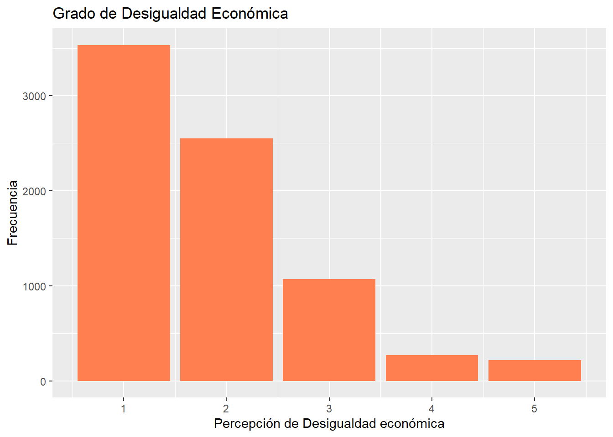
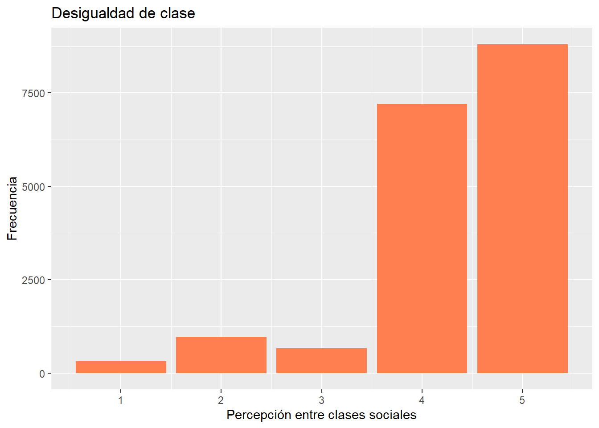

pacman::p_load(sjlabelled,
dplyr, #Manipulacion de datos
stargazer, #Tablas
sjmisc, # Tablas
kableExtra, #Tablas
sjPlot, #Tablas y gráficos
corrplot, # Correlaciones
sessioninfo, # Información de la sesión de trabajo
ggplot2) # Para la mayoría de los gráficPráctico 2
Práctico 2
Percepción de Desigualdad para el año 2016
Chile es reconocido de manera internacional como un país estable económicamente, con grandes recursos naturales y un clima diverso. La economía en Chile está condicionada por el modelo neoliberal establecido en los años 80 por medio de la Dictadura militar, esto quiere decir que existe la libre competencia, generando así una diversificación de servicios. Tal es el impacto que genera el país a nivel latinoamericano que Chile obtiene uno de los niveles más altos en Latinoamérica y el Caribe de producto interno bruto por habitantes, generando así un camino hacia una economía más desarrollada y rica (solimano2018?). Asimismo, Chile se ha mantenido en un alza permanente en los últimos 35 años a través de la creación de acuerdos internacionales y políticas nacionales. De esta manera lo evidencia el Banco mundial estableciendo a Chile como unas de las economías latinas de más rápido crecimiento reduciendo los niveles de pobreza de un 26% a un 7,9% (mieresbrevis2020?).
Pese a este constante crecimiento se logra evidenciar grandes concentraciones de ingresos que abarcan los sectores con mayor poder adquisitivo del país, en que según los Sociólogos Atria & Otero donde ambos índican que se aprecia que tan solo el top 1% chileno más rico accede al 30% del total de la recaudación nacional, mientras que el 50% más pobre solamente presenta el 10% total nacional (impuesto2021?). Tal acción permite un mayor desarrollo económico hacia estos sectores privilegiados, guiados principalmente por grandes grupos empresariales los cuales continúan aumentando sus recursos, condicionando este desarrollo del país a un imperceptible progreso que recae en cierto porcentaje de la elite. En consecuencia, se produce una desigualdad económica evidente en base a la redistribución de impuestos ya que no se cobran impuestos más altos a quienes poseen mayores ingresos y tienen mayor capacidad de pago.
A su vez, la desigualdad posee características negativas que afrontan una serie de consecuencias en las sociedades en las que esta se desarrolla con mayor preponderancia y evidencia. Como relevancia sociológica se tomarán en cuenta tres efectos de las diferencias económicas tratados por Atría & Otero en Impuestos justos para el Chile que Viene (2021). El primero es que la cohesión entre grupos heterogéneos, de extremos diferentes, resulta cada vez más compleja. Lo segundo es que se pierde la identidad de la meritocracia ya que las ventajas sociales son productos heredados generacionalmente, deshaciendo el derecho a la igualdad de oportunidades. Por último, incrementa las diferencias económicas entre los altos y bajos ingresos, para así seguir fortaleciendo a los grupos dominantes. Tales efectos actúan de manera interseccional confiriendo un fenómeno amplio de conflicto social (impuesto2021?).
Si bien los datos permiten evidenciar la problemática de la desigualdad, es totalmente contrario la sensación que los ciudadanos chilenos perciben de la desigualdad económica en el país. En base a los datos presentados en el Estudio longitudinal social de Chile del año 2016 (Ola I) se constata una visión negativa respecto a los índices de desigualdad económica, siendo 2.568 encuestados de un total de 2.913 casos los que consideran que en Chile las diferencias de ingresos son demasiado grandes. Es por esto que, consideraremos como propuesta central a investigar el grado de percepción de desigualdad que poseen los chilenos y chilenas según su condición socioeconomica, con tal de poder identificar las sensaciones y pensamientos que tienen las clases sociales.
Sobre la base, contemplaremos en la presente investigación como “Desigualdad Económica” la aproximación que se concentra en la percepción sobre la distribución económica sin un componente evaluativo, con tal de definir la sensación del nivel de desigualdad económica que existe en la sociedad chilena (castillo2012?).
A la vez, teóricamente se expresan dos hipótesis que adjudican dos factores disimiles que afectan la percepción de desigualdad. En un primer término (Evans et al., 1992; Schattschneider, 1960 como se citó en Segovia & Gamboa, 2015) puede variar respecto al nivel económico que los involucrados posean al momento de la encuesta. En este sentido, las personas que resulta que obtienen una mayor percepción de desigualdad tienden a estar dentro de los grupos con menores ingresos, ya que se mantienen directamente impactados por los efectos de la desigualdad, dado esto exhibirían una mayor preocupación hacia la problemática y tenderían a evaluar con mayor rigor y negatividad los niveles alcanzados. Mientras que, como segundo término la estimación de ingresos, es decir, la percepción de desigualdad es mayor en grupos con ingresos y niveles educacionales más altos, ya que al tener esta característica tenderán a acertar con mayor facilidad y tener mayor conocimiento sobre el problema. Castillo et al., 2012; Bartels, 2008; McCall, 2005; 2013; Page & Jacobs, 2009 como se citó en (segovia2016?).
De acuerdo con lo anterior y en base a la información recabada, para la presenta investigación se considerará como hipótesis el primer término, por lo que a medida en que menores ingresos poseen los encuestados mayor percepción de desigualdad evidencian.
Base de datos
setwd("C:/Users/matia/Documents/Trabajo 2")library("tidyverse")-- Attaching packages --------------------------------------- tidyverse 1.3.2 --v tibble 3.2.1 v purrr 0.3.4
v tidyr 1.2.1 v stringr 1.5.1
v readr 2.1.3 v forcats 0.5.1-- Conflicts ------------------------------------------ tidyverse_conflicts() --
x tibble::add_case() masks sjmisc::add_case()
x forcats::as_factor() masks sjlabelled::as_factor()
x ggplot2::as_label() masks dplyr::as_label(), sjlabelled::as_label()
x dplyr::filter() masks stats::filter()
x kableExtra::group_rows() masks dplyr::group_rows()
x purrr::is_empty() masks sjmisc::is_empty()
x dplyr::lag() masks stats::lag()
x tidyr::replace_na() masks sjmisc::replace_na()library("table1")
Attaching package: 'table1'
The following objects are masked from 'package:base':
units, units<-library("psych")
Attaching package: 'psych'
The following objects are masked from 'package:ggplot2':
%+%, alphalibrary("haven")
Attaching package: 'haven'
The following objects are masked from 'package:sjlabelled':
as_factor, read_sas, read_spss, read_stata, write_sas, zap_labelslibrary("sjmisc")
library("lm.beta")
library("dplyr")
library("Hmisc")
Attaching package: 'Hmisc'
The following object is masked from 'package:psych':
describe
The following objects are masked from 'package:table1':
label, label<-, units
The following object is masked from 'package:sjmisc':
%nin%
The following objects are masked from 'package:dplyr':
src, summarize
The following objects are masked from 'package:base':
format.pval, unitslibrary("PerformanceAnalytics")Loading required package: xts
Loading required package: zoo
Attaching package: 'zoo'
The following objects are masked from 'package:base':
as.Date, as.Date.numeric
Attaching package: 'xts'
The following objects are masked from 'package:dplyr':
first, last
Attaching package: 'PerformanceAnalytics'
The following object is masked from 'package:graphics':
legendlibrary("sjPlot")
library("texreg")Version: 1.38.6
Date: 2022-04-06
Author: Philip Leifeld (University of Essex)
Consider submitting praise using the praise or praise_interactive functions.
Please cite the JSS article in your publications -- see citation("texreg").
Attaching package: 'texreg'
The following object is masked from 'package:tidyr':
extractlibrary("car")Loading required package: carData
Attaching package: 'car'
The following object is masked from 'package:psych':
logit
The following object is masked from 'package:purrr':
some
The following object is masked from 'package:dplyr':
recodelibrary("pacman")
library("Rcpp")Base <- read_sav("ELSOC_Long_2016_2022_v1.00.sav")Variables
Para la realización de la investigación se tomaron en cuenta 4 variables de la Base del SOC del COES del año 2016 las cuales nos guiarán en el proceso evaluativo de la percepción de desigualdad que se sentía en esos años en la población Chilena. Entre estas encontramos:
1) C18_11: En chile, las diferencias de ingresos son demasiado grandes.
2) d19: ¿Y cuan justa o injusta cree ud que es la diferencia en la situación de vida entre las personas de clase social alta y las de clase social baja en Chile?.
3) m0_sexo: sexo de los encuestados.
Base_elsoc <- Base %>% select(Ingresos=d19, #Grandes diferencias de ingresos
Desigualdad=c18_11,Sexo=m0_sexo)Estas fueron modificadas para una mejor implementación, quitando la datificación perdida, en conjunto con los datos que arrojan distintos errores en el momento que se realizó la encuesta. Asimismo, se le reasignaron nombres más sustantivos a las variables para que estas sean aún más identificables.
c18_11 = Desigualdad
d19 = Ingresos
m0_sexo = Sexo
Datos descriptivos de las variables
frq(Base_elsoc$Ingresos)Justificacion de diferencias entre clases sociales (x) <numeric>
# total N=18035 valid N=7713 mean=-6.50 sd=86.34
Value | Label | N | Raw % | Valid % | Cum. %
--------------------------------------------------------------------------------
-999 | No Responde | 18 | 0.10 | 0.23 | 0.23
-888 | No Sabe | 46 | 0.26 | 0.60 | 0.83
-777 | Valor perdido por error tecnico | 0 | 0.00 | 0.00 | 0.83
-666 | Valor perdido por encuesta incompleta | 8 | 0.04 | 0.10 | 0.93
1 | Muy injusta | 3533 | 19.59 | 45.81 | 46.74
2 | injusta | 2548 | 14.13 | 33.04 | 79.77
3 | Ni injusta ni justa | 1072 | 5.94 | 13.90 | 93.67
4 | Justa | 271 | 1.50 | 3.51 | 97.19
5 | Muy justa | 217 | 1.20 | 2.81 | 100.00
<NA> | <NA> | 10322 | 57.23 | <NA> | <NA>En la primera variable logramos observar como los datso perdidos por No sabe o no responde se llevan un porcentaje de los encuestados, por lo que deben ser eliminados para una mayor precisión a la hora de la interpretación.
A la misma vez, logramos observar que existe una tendencia positiva a evaluar muy injusta e injusta la situación de vida entre clases baja y alta.
frq(Base_elsoc$Desigualdad)Grado de acuerdo: Las diferencias de ingreso son demasiado grandes (x) <numeric>
# total N=18035 valid N=18035 mean=-0.02 sd=62.26
Value | Label | N | Raw % | Valid % | Cum. %
-------------------------------------------------------------------------------
-999 | No Responde | 21 | 0.12 | 0.12 | 0.12
-888 | No Sabe | 56 | 0.31 | 0.31 | 0.43
-777 | Valor perdido por error tecnico | 0 | 0.00 | 0.00 | 0.43
-666 | Valor perdido por encuesta incompleta | 10 | 0.06 | 0.06 | 0.48
1 | Totalmente en desacuerdo | 317 | 1.76 | 1.76 | 2.24
2 | En desacuerdo | 962 | 5.33 | 5.33 | 7.57
3 | Ni en desacuerdo ni de acuerdo | 657 | 3.64 | 3.64 | 11.22
4 | De acuerdo | 7203 | 39.94 | 39.94 | 51.16
5 | Totalmente de acuerdo | 8809 | 48.84 | 48.84 | 100.00
<NA> | <NA> | 0 | 0.00 | <NA> | <NA>En segunda instancia, observamos los descriptivos de la variable Desigualdad, en donde se aprecia que existe una alta presencia de acuerdo entre los encuestados para indicar que en Chile se presentan altos índices de diferencias de ingresos.
frq(Base_elsoc$Sexo)Sexo del entrevistado (x) <numeric>
# total N=18035 valid N=18035 mean=1.62 sd=0.49
Value | Label | N | Raw % | Valid % | Cum. %
-------------------------------------------------
1 | Hombre | 6833 | 37.89 | 37.89 | 37.89
2 | Mujer | 11202 | 62.11 | 62.11 | 100.00
<NA> | <NA> | 0 | 0.00 | <NA> | <NA>Finalmente, en la variable sexo logramos captar que hay una fuerte presencia del género femenino en la encuesta, por lo que probablmente los resultados indiquen mayor preponderancia hacia este género.
Casos perdidos eliminados
Base_elsoc$Ingresos <- recode(Base_elsoc$Ingresos, "c(-999,-888,-777,-666)=NA")
Base_elsoc$Desigualdad <- recode(Base_elsoc$Desigualdad, "c(-999,-888,-777,-666)=NA")
na.omit(Base_elsoc$Sexo)<labelled<double>[18035]>: Sexo del entrevistado
[1] 2 2 2 1 1 1 2 2 1 1 2 1 2 1 2 1 2 1 2 1 2 2 1 2 2 1 2 2 1 1 1 1 2 2 2 2
[37] 1 1 2 2 2 1 2 1 2 1 1 1 1 1 1 2 2 1 1 2 2 1 1 2 2 2 2 2 2 1 2 1 1 1 2 2
[73] 2 1 1 2 2 1 1 1 2 1 1 2 2 1 2 2 2 1 2 2 1 2 1 2 1 2 2 2 2 1 2 2 1 1 2 2
[109] 2 1 1 2 2 1 1 1 1 1 2 2 2 1 2 2 2 2 2 1 1 2 2 1 2 2 1 1 2 2 1 2 1 1 2 2
[145] 1 1 1 2 1 2 1 2 1 2 1 1 1 2 2 2 2 2 2 2 2 1 2 2 2 1 2 2 1 1 2 2 2 1 1 2
[181] 1 2 1 2 2 1 1 2 1 1 1 2 2 2 2 2 2 1 1 2 1 2 2 2 2 1 2 1 2 2 2 2 1 2 1 1
[217] 1 2 2 2 2 2 1 2 1 2 2 1 2 1 1 1 1 2 1 2 1 2 1 1 2 2 2 2 2 1 2 2 1 2 1 1
[253] 1 1 1 2 2 1 2 2 2 2 1 1 2 2 2 1 1 2 1 1 2 2 2 2 2 2 1 1 1 2 2 1 2 1 1 2
[289] 2 2 2 2 2 2 2 2 2 2 2 1 2 1 1 1 2 1 2 2 2 2 2 2 2 1 2 2 2 1 1 1 2 2 2 2
[325] 2 2 2 2 2 2 2 2 2 1 2 1 1 2 2 1 2 2 2 2 1 2 2 1 2 2 2 2 1 2 2 2 2 2 2 2
[361] 2 1 1 2 1 1 1 1 2 2 2 2 1 1 1 2 2 2 2 2 1 1 1 1 2 2 2 2 1 2 1 1 1 2 2 1
[397] 2 1 1 2 1 2 1 2 2 1 2 2 2 2 1 2 1 2 1 1 2 1 2 1 2 2 1 2 2 1 2 2 1 2 2 1
[433] 2 2 1 1 1 1 2 1 2 2 1 1 1 2 2 1 2 2 1 1 2 2 2 2 2 2 2 2 2 2 2 2 2 1 2 1
[469] 1 2 1 1 1 2 2 1 1 1 2 1 2 2 2 2 1 1 2 1 2 1 2 2 2 1 2 1 1 2 2 2 1 2 2 1
[505] 2 2 1 1 2 2 2 1 1 2 2 1 2 1 1 1 2 1 2 2 2 2 1 1 1 1 2 1 2 1 2 2 2 1 1 1
[541] 1 2 1 2 2 1 2 1 1 2 1 2 2 2 1 1 2 1 1 2 2 2 1 2 1 1 2 2 1 2 2 2 2 1 2 2
[577] 2 2 1 1 1 2 2 2 1 1 1 2 2 1 1 1 2 2 2 1 1 1 1 2 2 1 1 1 2 1 2 1 2 2 1 2
[613] 2 2 2 2 1 1 2 2 1 2 2 2 2 1 1 2 1 2 2 2 2 2 2 1 2 2 2 2 1 2 2 2 1 1 2 2
[649] 2 2 1 1 2 2 2 2 2 1 2 1 2 2 1 2 1 1 1 1 2 1 1 2 1 2 2 1 2 2 1 2 2 2 1 1
[685] 2 2 2 2 1 2 2 2 2 2 2 2 1 1 2 2 2 2 1 2 1 2 2 2 2 1 2 2 2 1 2 1 2 1 2 2
[721] 2 1 1 1 2 2 1 1 2 1 2 1 2 2 1 2 2 1 2 2 2 2 1 2 2 1 1 2 2 2 2 2 2 2 2 1
[757] 1 1 1 2 2 2 2 2 1 1 1 2 2 1 2 1 1 2 2 1 2 2 1 2 1 2 1 1 2 1 1 1 1 2 2 2
[793] 2 2 2 2 2 2 1 2 2 1 1 2 1 1 2 2 2 1 2 2 2 2 2 2 2 1 2 2 2 1 2 2 1 2 1 1
[829] 1 1 2 2 2 1 2 2 2 1 2 1 2 1 2 2 1 2 2 2 2 1 2 2 2 1 1 1 2 2 1 2 2 2 1 2
[865] 2 1 2 1 1 1 2 1 2 1 2 1 1 2 1 1 1 2 2 1 2 2 1 2 2 2 2 1 2 2 2 2 1 1 2 1
[901] 1 2 1 1 2 2 2 2 2 1 1 2 1 2 1 2 2 2 2 1 2 2 1 1 2 2 2 1 2 1 1 1 2 1 2 2
[937] 1 2 2 1 2 2 2 1 1 2 1 2 2 2 2 2 2 2 2 2 1 2 2 2 2 2 2 2 1 1 1 2 2 2 2 1
[973] 2 2 2 2 2 1 2 2 1 1 2 1 2 1 2 1 2 2 2 2 1 2 2 2 2 1 1 1 1 2 1 2 1 1 1 1
[1009] 2 2 1 1 1 1 2 1 1 2 2 2 1 1 1 1 2 1 1 2 2 1 2 2 2 1 2 2 2 1 1 2 2 2 2 2
[1045] 2 1 1 2 2 2 2 2 1 2 2 2 2 1 2 2 2 2 1 1 1 2 2 2 2 2 1 1 2 1 1 1 1 1 2 1
[1081] 2 2 2 2 2 2 1 1 1 2 2 2 2 1 2 1 2 2 2 1 2 2 2 2 2 2 2 2 2 1 1 2 2 2 1 2
[1117] 2 1 2 1 2 1 2 1 2 1 2 1 2 1 2 1 2 2 2 2 1 1 2 2 1 2 2 2 1 2 2 1 1 2 1 2
[1153] 2 2 2 1 1 2 2 1 1 1 1 2 1 1 1 1 2 2 1 1 2 2 2 2 2 2 2 1 1 1 2 2 1 2 1 2
[1189] 1 1 2 1 2 2 2 1 2 2 2 2 2 2 2 2 2 2 2 2 1 1 1 2 2 2 2 1 1 2 2 1 1 2 2 2
[1225] 1 1 1 2 2 1 2 2 2 2 1 1 2 2 1 1 2 1 2 1 2 1 2 2 2 1 2 2 2 2 1 1 1 1 1 2
[1261] 1 2 1 1 1 2 2 2 2 2 2 2 2 2 2 1 2 2 1 2 1 2 2 2 2 2 1 1 1 1 2 2 1 2 2 2
[1297] 2 1 2 2 2 2 2 1 2 2 1 1 1 2 1 2 2 2 2 2 1 1 2 2 2 2 1 2 2 1 2 2 2 1 1 1
[1333] 2 1 1 2 2 1 2 1 2 2 1 1 2 1 2 2 1 1 1 2 1 1 2 2 2 2 1 2 1 2 1 1 1 2 2 2
[1369] 1 2 2 2 2 2 2 1 2 2 2 2 1 1 1 2 1 2 2 2 1 1 2 1 2 2 2 2 2 2 2 2 1 2 2 1
[1405] 2 2 2 2 2 1 1 2 1 2 2 2 1 1 1 1 1 1 2 1 1 1 1 1 1 1 2 2 2 1 2 1 1 1 2 2
[1441] 1 1 2 2 2 1 1 1 1 2 1 2 2 2 2 1 2 1 1 2 2 1 2 2 2 1 1 2 2 1 1 2 2 1 2 2
[1477] 2 1 2 2 1 2 2 1 1 2 2 2 2 2 1 2 2 1 2 2 1 2 1 2 1 2 1 1 1 2 2 2 2 1 2 2
[1513] 2 2 1 2 1 2 2 2 1 1 2 2 2 1 2 1 2 2 2 2 2 1 2 1 1 2 1 2 2 2 2 1 1 1 1 1
[1549] 1 2 2 2 2 2 1 1 2 2 2 2 2 2 1 1 1 1 1 1 1 2 2 1 2 2 1 2 2 1 1 2 2 2 1 2
[1585] 1 1 2 1 1 2 1 1 2 2 1 1 1 2 1 2 2 2 2 2 1 2 2 1 1 2 2 2 2 1 1 2 1 1 2 2
[1621] 1 2 2 1 2 2 2 2 1 2 2 2 2 2 1 1 2 2 1 2 1 2 1 2 2 2 2 1 2 2 2 2 1 2 2 2
[1657] 2 2 1 1 1 1 2 1 2 2 1 2 2 2 2 2 1 2 2 2 2 1 1 2 2 2 2 2 2 2 2 1 2 2 1 1
[1693] 1 1 1 1 1 2 1 2 2 1 1 2 2 2 2 2 1 2 2 1 1 2 1 1 2 2 1 2 1 2 2 2 2 1 2 2
[1729] 2 2 2 2 2 2 2 2 1 2 1 2 2 1 1 1 2 2 2 2 1 2 2 2 2 2 2 1 2 2 1 2 1 2 2 2
[1765] 1 1 1 2 2 2 1 1 1 2 2 1 1 1 2 2 1 2 2 1 1 2 2 2 2 1 1 2 1 1 2 1 2 1 2 1
[1801] 1 1 2 2 1 2 1 2 2 2 2 2 2 1 2 1 2 2 2 2 1 1 1 1 2 2 2 1 2 1 1 2 2 2 1 2
[1837] 2 2 1 2 1 1 2 1 1 1 2 1 2 1 1 2 2 1 1 1 2 1 1 2 2 1 2 2 1 1 1 1 1 2 2 2
[1873] 2 2 2 2 2 1 2 1 1 2 1 1 1 1 2 1 2 1 2 2 1 1 2 1 2 2 2 2 2 2 2 2 2 2 1 2
[1909] 2 1 2 2 1 1 2 2 2 1 2 2 1 1 2 2 1 2 2 2 2 2 2 2 1 1 1 1 1 2 2 2 2 2 2 1
[1945] 2 2 1 2 2 2 2 1 1 2 2 2 2 1 1 1 1 2 2 1 2 1 1 1 1 1 1 1 1 2 2 2 1 1 2 1
[1981] 2 1 1 1 1 1 2 1 1 1 1 1 2 1 2 2 2 2 1 1 2 2 1 1 2 2 1 2 2 1 2 1 1 1 2 2
[2017] 2 2 2 2 2 2 1 2 1 1 1 2 1 1 1 2 2 2 2 2 1 1 2 1 2 1 2 2 1 2 1 2 1 2 2 2
[2053] 1 2 1 1 2 1 2 1 1 2 1 2 1 2 2 2 2 2 2 1 1 1 2 2 2 2 1 2 2 2 2 1 2 2 1 1
[2089] 2 2 1 2 2 2 2 1 1 2 2 1 2 2 1 2 2 1 1 2 1 2 1 2 2 1 2 1 1 2 1 2 2 1 1 2
[2125] 1 2 1 2 2 2 1 1 1 1 2 2 2 1 2 2 1 2 2 2 2 2 1 2 2 2 2 2 2 1 2 1 2 2 1 2
[2161] 2 2 2 2 2 2 2 2 2 2 2 2 1 2 1 2 2 2 1 1 1 2 2 1 2 1 2 2 1 1 2 1 2 2 2 2
[2197] 1 2 2 2 1 2 1 1 2 2 2 2 1 2 2 2 1 1 2 1 2 1 2 2 2 2 1 1 2 1 1 1 1 2 2 2
[2233] 2 2 1 1 2 2 1 2 1 2 2 2 1 1 2 2 2 2 1 2 2 1 2 2 2 2 2 2 2 2 2 1 1 2 1 1
[2269] 2 2 2 1 1 1 1 1 2 1 2 2 2 2 2 2 1 2 2 2 1 1 2 2 1 2 2 1 1 2 2 1 1 2 2 1
[2305] 2 2 2 2 1 2 1 1 1 2 1 2 1 2 2 2 1 2 2 2 2 2 2 2 2 2 2 2 1 1 2 2 2 1 2 1
[2341] 2 2 2 1 1 1 2 2 2 2 1 1 2 2 2 2 2 2 1 2 1 2 2 1 2 1 1 2 2 2 1 1 2 1 2 2
[2377] 1 2 2 2 2 1 2 2 2 1 2 1 1 2 2 2 2 2 1 1 2 1 2 2 1 2 1 2 2 1 1 2 1 2 1 1
[2413] 1 2 2 2 2 2 2 1 2 1 2 2 1 2 2 2 2 2 2 1 1 2 2 2 2 2 2 2 2 2 2 1 1 2 2 2
[2449] 2 1 1 2 1 1 2 2 2 2 1 1 2 2 1 1 1 1 2 2 2 1 2 1 2 2 2 2 2 2 2 2 1 1 1 1
[2485] 1 2 1 2 2 1 1 2 1 2 1 2 1 2 2 2 2 2 1 1 2 1 2 2 2 2 2 2 2 2 2 1 2 1 1 2
[2521] 2 2 2 1 2 1 2 1 2 1 2 1 2 2 1 2 2 1 2 1 1 1 2 1 1 1 2 2 2 2 2 1 2 2 2 2
[2557] 2 1 2 1 2 2 2 2 2 1 1 1 1 2 2 1 2 2 2 2 2 2 2 2 2 2 1 1 1 1 2 1 2 1 2 1
[2593] 2 1 2 2 1 1 2 2 2 1 2 2 2 2 1 1 1 2 2 1 1 2 2 1 2 2 2 1 2 1 2 2 2 1 1 2
[2629] 2 2 2 2 1 1 2 2 2 2 2 2 2 2 2 2 2 1 2 2 2 2 2 2 2 2 1 2 2 2 2 2 2 2 1 1
[2665] 1 1 1 2 1 2 2 2 2 1 2 2 1 1 2 2 1 2 2 2 2 2 2 2 2 1 1 1 2 2 2 2 2 2 2 2
[2701] 2 1 2 2 1 1 2 2 2 1 2 2 2 2 2 1 2 1 1 2 1 2 2 1 1 1 1 2 2 2 2 1 2 1 2 2
[2737] 2 2 1 2 1 2 1 1 2 1 1 2 1 2 1 2 2 1 2 2 2 1 2 2 1 1 1 1 2 1 2 2 2 2 2 1
[2773] 1 2 2 2 2 2 2 2 2 2 1 2 1 2 1 1 1 1 2 1 1 1 1 1 1 1 1 2 1 2 2 2 1 2 1 2
[2809] 2 1 2 1 2 2 2 2 1 1 2 2 2 2 1 1 1 2 2 2 2 1 2 1 2 2 1 2 2 1 2 1 2 1 2 2
[2845] 1 2 1 2 2 2 1 2 2 2 2 2 1 1 2 2 1 2 2 2 1 2 1 2 1 1 1 2 1 2 2 1 2 1 1 2
[2881] 2 1 1 2 2 1 2 1 2 2 1 1 2 1 1 2 1 1 2 2 2 2 1 2 1 1 1 1 2 1 2 2 2 2 1 1
[2917] 1 2 2 2 1 1 1 2 2 1 1 2 2 2 1 1 1 2 2 1 1 2 1 2 1 2 1 2 1 2 1 2 2 1 2 2
[2953] 1 2 2 1 1 1 1 2 2 2 2 1 1 2 1 2 1 2 1 1 1 1 1 1 2 2 1 1 2 2 1 2 2 2 2 2
[2989] 2 1 1 1 1 2 2 1 1 2 2 1 1 1 2 1 1 2 2 1 2 2 2 1 2 1 2 1 2 2 2 2 2 1 2 2
[3025] 2 2 2 1 1 2 2 1 1 1 2 2 2 2 2 2 2 2 1 1 2 1 2 2 1 1 2 2 2 1 1 2 2 1 2 2
[3061] 2 1 2 1 1 1 1 2 2 2 2 2 2 2 1 2 2 1 2 2 1 1 2 2 1 2 1 2 2 2 1 1 1 2 2 2
[3097] 2 2 2 1 1 2 2 2 2 1 2 1 2 2 2 1 2 1 1 1 2 2 2 2 1 2 1 2 2 1 2 1 1 1 1 2
[3133] 1 2 1 2 1 1 2 2 2 2 1 2 1 2 1 1 1 1 2 2 1 2 2 2 2 1 2 2 2 1 1 2 1 1 2 2
[3169] 2 2 2 2 1 1 1 2 2 1 2 1 1 2 2 2 2 2 2 2 2 2 1 2 1 1 1 2 2 2 2 2 2 2 1 1
[3205] 2 2 2 2 2 2 2 2 2 2 2 1 2 1 2 2 1 2 2 1 2 2 2 2 2 1 2 2 2 2 2 2 2 1 1 2
[3241] 1 1 1 2 2 2 2 1 1 1 2 2 2 1 1 1 2 2 2 2 2 1 2 1 1 2 1 2 2 1 2 2 2 2 2 1
[3277] 1 2 1 2 1 2 2 1 2 2 1 2 2 1 2 2 1 1 1 1 2 1 2 2 1 1 1 2 2 1 2 2 1 1 2 2
[3313] 2 2 2 2 2 2 2 2 1 1 2 1 1 2 1 1 1 2 1 2 2 1 1 2 1 2 1 2 1 2 2 2 1 2 2 1
[3349] 2 2 1 1 2 2 2 1 1 2 2 1 2 1 1 1 2 1 2 2 2 2 1 1 1 2 1 1 2 2 2 1 1 2 1 2
[3385] 2 1 1 1 1 2 2 2 1 2 1 1 2 2 2 1 2 1 2 2 1 2 1 2 2 2 2 1 1 1 2 2 1 2 2 1
[3421] 1 2 2 2 1 1 1 2 2 1 1 1 1 2 2 1 2 2 2 2 2 2 1 2 2 2 2 1 1 2 1 2 2 2 2 2
[3457] 1 2 2 2 2 1 2 2 2 1 1 2 2 2 2 1 1 2 2 2 2 2 1 2 1 2 2 1 2 1 1 1 1 2 1 1
[3493] 2 1 2 2 1 2 2 2 2 2 1 1 2 2 2 1 2 2 2 2 2 1 2 2 2 1 2 2 2 2 2 2 2 1 2 1
[3529] 2 1 2 2 1 2 1 2 1 2 2 2 1 2 2 2 2 1 1 1 2 2 2 1 1 2 2 1 2 1 2 2 1 2 2 1
[3565] 2 1 1 2 1 1 2 2 2 2 2 2 2 2 1 2 1 1 2 1 2 2 2 1 2 2 2 2 2 2 2 2 1 2 2 1
[3601] 2 1 1 1 1 2 2 2 1 2 2 2 2 1 2 1 2 2 2 2 1 2 2 2 1 2 1 2 2 2 1 2 2 2 1 1
[3637] 1 2 1 2 1 2 1 1 2 1 1 2 2 1 2 2 1 2 2 2 2 1 2 2 2 2 1 1 1 1 2 1 2 2 2 2
[3673] 1 2 1 2 1 2 2 2 2 2 2 1 1 2 2 2 2 1 1 1 2 1 2 1 2 2 1 2 2 2 1 1 2 1 2 2
[3709] 2 2 2 2 2 1 2 2 2 2 2 2 2 1 1 1 2 2 2 1 2 2 2 2 2 1 2 2 1 1 2 1 2 1 2 1
[3745] 2 2 2 2 1 2 2 2 2 1 1 1 2 1 2 1 1 1 1 2 2 1 1 1 1 2 1 1 2 2 1 1 2 1 1 2
[3781] 2 1 2 2 2 1 2 2 2 1 1 2 2 2 2 2 1 2 2 2 2 2 1 2 2 2 2 1 2 2 2 1 1 1 2 2
[3817] 2 2 1 1 1 1 1 1 2 1 2 2 2 2 1 1 1 2 2 2 2 1 2 1 2 2 2 1 2 2 2 2 2 2 2 2
[3853] 2 1 1 2 2 2 1 2 2 2 1 2 1 2 1 2 1 2 1 2 1 2 1 2 2 2 2 1 1 2 2 1 2 2 2 1
[3889] 2 2 1 1 1 2 2 2 2 1 1 2 2 1 1 1 1 2 1 1 1 1 2 2 1 1 2 2 2 2 2 2 1 1 2 2
[3925] 1 2 1 2 1 1 2 1 2 2 1 2 2 2 2 2 2 2 2 2 2 2 1 1 1 2 2 2 1 2 2 1 1 2 2 2
[3961] 1 1 1 2 2 1 2 2 2 1 1 2 2 1 2 1 2 2 2 2 2 2 2 2 1 1 1 1 1 2 2 1 2 2 2 2
[3997] 2 2 2 2 2 1 2 2 1 2 1 2 2 2 2 2 1 1 1 1 2 1 2 2 2 2 1 2 2 2 2 2 1 2 2 1
[4033] 1 2 1 2 2 2 2 2 1 1 2 2 2 2 1 2 1 2 2 2 1 1 1 2 1 1 2 2 1 2 1 2 1 2 1 2
[4069] 2 1 1 1 2 1 2 2 2 2 2 1 1 1 1 2 2 2 1 2 2 2 2 2 2 1 1 1 1 2 2 2 1 2 1 2
[4105] 2 2 2 2 2 2 2 2 2 1 2 2 2 2 2 1 2 1 2 1 1 1 1 2 1 1 1 1 1 2 2 2 1 2 1 1
[4141] 1 2 2 1 1 2 2 1 1 2 1 2 2 1 2 1 1 2 2 1 2 2 2 1 1 2 1 1 2 2 2 2 1 2 2 1
[4177] 2 2 1 1 2 2 2 2 2 1 2 2 1 2 2 1 2 1 2 1 2 1 1 1 2 2 2 2 1 2 2 2 1 2 1 2
[4213] 2 2 1 2 2 2 1 2 2 2 2 2 2 1 1 2 1 2 2 2 1 1 1 1 1 2 2 2 2 1 1 2 2 2 1 1
[4249] 1 1 1 1 1 2 1 2 2 1 2 2 1 1 2 2 2 1 2 1 1 2 1 1 2 1 1 2 1 1 2 1 2 2 2 2
[4285] 2 1 2 2 1 1 2 2 2 2 1 1 2 1 1 2 2 1 2 2 2 2 1 2 2 2 2 2 1 1 2 2 1 2 1 2
[4321] 1 2 2 2 2 2 2 2 1 2 2 2 2 1 1 1 2 1 2 2 1 2 2 2 2 1 2 2 1 1 2 2 2 2 2 2
[4357] 2 1 2 2 1 1 1 1 1 1 1 2 1 2 2 1 1 2 2 2 2 2 1 2 2 1 1 2 1 2 2 2 1 2 2 2
[4393] 1 2 2 2 2 2 2 2 2 2 2 2 1 2 1 2 2 1 2 2 2 1 2 2 2 2 2 2 1 2 1 2 2 2 1 1
[4429] 1 2 2 1 1 1 2 1 1 1 2 2 1 2 2 1 1 2 2 2 2 1 1 2 1 1 2 1 2 1 2 1 1 1 2 2
[4465] 1 2 1 2 2 2 2 2 1 1 2 2 2 1 2 2 2 2 1 2 2 2 1 2 2 1 2 1 1 1 1 2 1 2 1 1
[4501] 2 2 1 1 1 2 1 1 2 2 1 2 2 1 1 1 2 2 2 2 2 2 2 1 1 1 1 1 2 1 2 1 2 1 1 2
[4537] 1 2 2 2 2 2 2 2 2 1 2 2 1 2 2 1 1 2 2 1 2 1 1 2 2 1 2 2 2 2 2 2 1 1 1 1
[4573] 2 2 2 2 2 1 2 2 2 2 2 1 2 2 2 2 1 1 1 1 2 2 1 1 1 1 1 2 2 2 1 2 1 1 2 1
[4609] 1 2 1 2 2 1 1 2 2 2 1 2 1 1 2 2 2 2 2 2 1 1 1 1 2 1 1 1 2 2 2 2 1 1 2 2
[4645] 1 2 2 1 2 1 2 2 2 2 1 2 1 1 2 1 1 1 1 2 2 2 2 2 2 1 1 1 2 2 2 1 2 2 2 2
[4681] 2 2 1 1 2 2 1 2 2 2 2 1 2 2 1 2 2 1 2 2 1 2 1 2 2 1 2 1 1 2 1 2 1 1 2 1
[4717] 2 2 2 2 1 1 1 1 2 1 2 2 1 2 2 2 2 2 2 2 2 2 2 2 1 2 2 2 1 2 2 2 2 2 2 2
[4753] 2 2 2 1 2 1 2 2 2 1 1 2 2 1 2 1 2 2 1 2 1 2 2 2 2 1 2 2 2 1 2 1 1 2 2 2
[4789] 2 2 2 2 1 2 2 1 2 2 2 2 1 1 2 1 1 1 1 2 2 2 2 1 2 2 2 1 2 2 2 1 1 2 2 1
[4825] 2 2 1 2 2 2 2 2 2 2 2 2 1 1 2 1 1 2 2 1 1 2 1 1 2 2 2 2 2 2 2 2 2 1 1 2
[4861] 2 1 2 2 1 1 2 2 1 2 2 2 2 2 1 2 1 1 1 2 1 2 2 2 1 2 2 2 2 2 2 2 2 1 2 2
[4897] 1 2 1 2 2 2 1 1 1 2 2 2 2 1 2 2 2 2 2 2 1 2 1 1 2 1 1 2 2 2 1 1 2 1 2 2
[4933] 1 2 2 2 2 2 2 1 2 1 1 2 2 2 2 1 1 1 2 2 1 1 2 1 1 2 1 1 2 2 2 2 2 1 2 1
[4969] 2 2 2 2 2 2 1 1 2 2 2 2 2 2 2 2 2 1 2 2 1 1 2 1 1 2 2 2 1 1 2 2 1 1 1 1
[5005] 2 2 2 1 2 1 2 2 2 2 2 2 2 2 1 1 1 1 1 1 2 2 1 2 1 2 2 2 2 2 1 2 1 2 2 2
[5041] 2 2 2 2 2 1 2 2 2 2 1 1 2 2 1 2 1 2 2 1 2 1 1 1 2 1 2 2 2 2 2 1 2 2 2 1
[5077] 2 1 2 2 2 2 2 1 1 1 2 2 1 2 2 2 2 2 2 2 2 1 1 1 1 2 1 2 1 2 1 2 1 2 2 1
[5113] 2 2 1 2 2 2 2 1 1 1 2 2 1 1 2 2 2 2 2 2 1 2 2 2 1 1 2 2 2 2 1 1 2 2 2 2
[5149] 2 2 2 2 2 1 2 2 2 2 2 2 1 2 2 2 2 2 2 2 2 1 1 1 1 2 1 2 2 2 2 1 2 2 1 1
[5185] 2 2 1 2 2 2 2 2 2 1 1 1 2 2 2 2 2 2 2 2 1 2 2 1 1 2 2 2 1 2 2 2 2 2 1 2
[5221] 1 1 2 1 2 1 1 1 1 2 2 2 2 2 2 1 2 2 2 2 1 2 1 2 1 1 2 1 2 2 1 2 2 2 1 2
[5257] 2 1 1 1 2 1 2 2 2 2 1 1 2 2 2 2 2 2 2 2 1 1 2 1 1 1 1 2 1 1 1 1 1 1 2 2
[5293] 2 2 2 2 1 2 2 2 2 2 1 1 2 2 2 2 1 1 1 2 2 2 2 1 2 1 2 1 2 2 1 2 2 1 2 1
[5329] 2 2 2 1 2 2 2 2 1 1 2 1 2 2 1 2 1 1 1 1 2 1 2 2 1 2 1 1 2 2 1 1 2 2 1 2
[5365] 1 2 2 1 2 1 1 2 1 1 2 2 2 2 1 2 1 1 1 2 1 2 2 2 2 1 1 2 2 1 1 1 2 2 1 1
[5401] 2 2 2 1 1 2 2 1 2 1 2 1 2 1 2 1 2 2 1 2 2 1 2 2 1 1 1 1 2 2 1 1 2 1 2 1
[5437] 2 1 1 1 1 1 2 1 1 2 2 1 2 2 2 2 2 2 1 1 1 1 2 2 1 1 2 2 1 1 2 1 2 1 2 2
[5473] 1 2 1 2 1 2 1 2 2 2 1 2 2 2 2 2 1 1 2 1 1 1 2 2 2 2 2 2 2 2 1 1 2 1 2 2
[5509] 1 2 2 2 1 1 2 2 1 2 2 1 1 2 1 1 1 2 2 2 2 2 2 1 2 1 2 1 2 1 1 2 2 1 2 2
[5545] 1 1 2 1 2 2 2 2 1 1 2 2 2 2 2 1 2 2 2 1 2 1 1 1 2 2 2 2 2 1 2 2 1 2 1 1
[5581] 1 1 2 1 2 1 2 1 1 2 2 2 1 2 1 2 1 1 1 1 2 2 2 2 2 2 1 2 2 2 1 1 2 1 1 2
[5617] 2 2 2 2 2 1 1 1 2 2 1 2 2 2 2 2 1 2 2 2 2 1 2 1 1 2 2 2 2 2 2 2 1 2 1 1
[5653] 2 2 2 1 2 2 2 2 2 1 2 1 1 2 2 1 2 2 1 2 2 2 2 2 2 1 2 2 2 2 2 2 1 1 2 1
[5689] 1 2 2 2 2 1 1 1 2 2 2 1 1 2 2 2 1 2 2 2 1 1 2 1 2 1 2 2 1 2 2 2 2 1 2 1
[5725] 1 2 1 2 1 2 2 1 2 2 2 2 2 1 2 2 1 1 1 1 2 2 2 1 1 1 2 2 1 2 2 1 1 2 2 2
[5761] 2 2 2 2 2 2 2 1 1 2 1 1 2 1 1 1 2 2 2 1 2 1 2 1 2 1 2 1 2 2 2 1 2 1 2 2
[5797] 1 1 2 2 2 1 1 2 2 1 2 1 1 2 1 2 2 2 1 1 1 1 2 1 2 2 2 2 1 1 2 1 2 2 1 1
[5833] 1 2 2 2 1 1 2 2 1 2 1 2 1 2 1 2 2 2 2 1 2 2 1 2 1 2 2 2 1 2 2 1 1 1 2 2
[5869] 2 1 2 2 2 2 2 1 1 2 2 2 2 1 2 1 2 2 2 2 1 2 2 2 2 1 2 2 2 1 2 2 2 2 2 1
[5905] 2 1 2 1 2 1 1 1 1 2 1 2 1 2 1 2 2 2 1 1 2 2 1 2 2 2 2 2 1 1 2 2 2 1 2 2
[5941] 2 1 2 2 1 2 1 2 1 1 2 1 1 2 2 2 2 1 1 2 2 2 2 1 1 2 2 1 1 2 2 1 2 1 2 2
[5977] 2 1 2 1 1 1 2 1 2 2 2 2 2 2 2 2 2 1 2 1 1 2 2 2 2 2 2 2 2 2 2 2 2 2 1 2
[6013] 2 1 1 1 1 1 2 2 1 2 2 1 2 1 2 2 1 2 2 2 2 1 2 2 2 1 2 1 2 2 2 1 2 2 2 1
[6049] 1 1 2 2 1 2 1 1 2 1 1 2 2 1 2 1 2 2 2 2 1 2 2 2 1 2 1 1 2 2 1 2 1 2 2 2
[6085] 2 1 2 2 1 1 2 2 2 2 1 1 2 1 2 2 2 1 2 2 2 1 1 2 1 2 2 2 2 2 2 2 1 2 2 2
[6121] 2 2 2 2 1 1 1 2 2 1 2 2 2 1 2 2 1 2 1 2 1 2 1 2 2 2 2 1 2 2 2 2 1 1 1 2
[6157] 1 2 1 1 1 1 2 1 1 1 1 2 1 1 2 2 1 1 1 2 1 2 2 1 2 2 2 1 2 2 1 1 2 2 2 2
[6193] 2 1 2 2 2 1 2 1 2 2 2 2 1 2 2 2 1 1 1 2 2 2 1 1 1 1 2 1 2 2 2 2 2 1 1 1
[6229] 2 2 2 2 1 2 1 2 2 1 2 2 2 2 2 2 1 2 2 2 1 2 2 1 2 1 2 1 2 1 2 1 2 1 1 2
[6265] 2 2 2 2 1 2 2 1 2 2 2 1 2 2 1 1 1 2 2 2 2 1 2 1 1 1 1 2 1 1 1 1 1 1 2 2
[6301] 2 2 2 2 1 1 2 2 1 2 2 1 2 1 2 2 1 2 2 2 2 2 2 2 2 2 2 2 1 1 1 2 2 2 1 2
[6337] 2 1 1 2 2 2 1 1 1 2 2 1 2 2 1 1 2 2 1 2 1 2 1 2 2 2 2 2 1 1 1 1 1 2 2 2
[6373] 2 2 2 2 2 2 2 2 1 2 2 2 2 1 2 2 2 2 1 1 1 2 2 1 2 2 2 2 1 2 2 2 2 1 2 2
[6409] 1 1 2 2 2 2 2 2 1 1 2 2 2 1 2 2 1 2 2 2 1 1 1 2 1 1 2 2 2 1 2 2 2 1 2 1
[6445] 1 1 2 1 2 2 2 2 2 1 1 1 1 2 2 2 2 2 2 2 2 2 2 1 1 1 2 1 2 2 1 2 1 2 2 2
[6481] 2 2 2 2 2 2 2 1 2 2 2 2 2 1 2 1 2 2 2 1 1 1 2 1 1 1 1 1 2 2 2 1 2 1 1 1
[6517] 2 2 1 1 2 2 1 1 1 2 2 2 1 2 1 1 2 2 1 2 2 2 1 2 1 2 2 2 2 2 1 2 2 1 2 2
[6553] 1 1 2 2 2 2 2 1 2 1 2 2 2 1 2 1 2 1 1 2 2 2 2 1 2 2 2 1 2 1 2 2 2 1 2 2
[6589] 2 1 2 1 2 2 2 2 2 1 1 1 2 1 2 2 2 2 1 1 1 1 1 2 2 2 2 1 1 2 2 2 2 1 1 1
[6625] 1 1 1 2 1 2 2 1 2 1 2 2 2 1 2 1 1 2 1 1 2 1 1 2 1 1 1 1 2 2 2 2 1 2 2 1
[6661] 1 2 2 2 2 1 2 1 1 2 2 1 2 2 2 1 2 2 2 2 2 1 2 1 2 1 2 1 2 2 2 2 2 2 2 2
[6697] 1 2 2 2 1 1 1 2 1 2 2 1 2 2 2 1 2 2 2 1 1 2 2 2 2 2 1 2 1 1 1 1 1 1 2 1
[6733] 2 1 2 2 2 2 2 1 2 1 1 2 1 1 2 2 2 1 2 2 2 1 2 2 2 2 2 2 2 2 1 2 2 2 2 2
[6769] 1 2 2 2 2 2 1 2 2 1 2 1 2 2 2 1 1 1 2 2 2 1 1 2 2 1 1 2 2 1 2 2 1 2 2 2
[6805] 1 2 1 2 1 2 1 2 1 1 2 2 1 2 1 2 2 2 2 2 1 2 1 2 2 2 1 2 2 2 2 1 1 2 2 1
[6841] 2 2 1 1 1 2 1 1 1 2 1 2 1 1 1 1 2 2 1 2 2 1 1 1 2 2 2 1 2 2 1 1 1 1 1 2
[6877] 1 2 1 2 2 1 1 2 2 2 2 2 2 2 2 2 1 2 2 1 2 1 1 2 2 2 1 2 2 1 1 2 1 2 2 2
[6913] 2 2 2 2 1 1 1 1 2 2 2 2 1 1 2 1 2 1 2 2 2 2 2 2 2 2 2 2 2 2 2 2 1 1 2 2
[6949] 2 1 2 2 2 1 2 2 2 2 1 1 2 2 2 1 1 1 1 2 2 1 1 2 2 2 2 1 1 2 1 1 2 1 1 2
[6985] 1 2 2 1 1 2 2 2 1 1 2 2 2 2 2 2 2 2 1 1 2 1 1 2 2 2 2 1 1 2 1 2 1 1 2 1
[7021] 2 2 2 2 1 2 1 1 2 1 2 1 2 2 2 2 2 1 1 2 2 2 1 2 2 2 2 2 2 1 2 2 1 2 2 2
[7057] 2 2 2 1 2 2 1 2 2 1 2 1 2 2 1 2 1 1 2 1 2 1 2 1 1 2 2 1 1 1 1 2 1 2 2 2
[7093] 2 2 2 2 2 2 2 1 2 2 2 1 2 2 2 2 2 2 2 2 1 2 1 2 2 1 2 2 2 2 2 2 1 2 2 2
[7129] 1 2 2 1 2 1 1 2 2 2 2 2 2 2 1 1 2 1 2 2 2 2 1 1 1 1 1 1 2 2 1 1 2 2 1 2
[7165] 2 2 1 2 2 2 2 2 2 2 2 2 2 1 2 1 1 2 1 2 1 1 2 2 2 2 2 2 1 2 2 2 1 2 2 2
[7201] 2 1 1 2 1 2 2 2 2 2 2 1 1 2 1 2 2 1 2 1 2 2 2 2 2 2 2 2 2 2 2 1 2 1 2 1
[7237] 2 2 2 2 2 2 2 2 2 2 1 2 1 1 1 2 1 1 2 1 1 2 1 2 2 2 2 2 2 2 2 1 2 2 2 2
[7273] 1 1 1 2 2 1 2 1 2 1 1 2 1 2 1 1 2 2 2 1 2 1 2 1 2 2 2 2 2 2 2 2 2 2 2 2
[7309] 1 1 2 2 2 2 1 1 2 2 2 1 1 1 2 2 2 2 1 2 2 2 2 2 2 1 1 1 1 1 1 1 2 2 2 2
[7345] 2 1 2 1 2 2 2 2 2 2 2 2 1 2 2 2 2 1 1 2 2 1 2 1 2 2 1 2 2 1 1 2 1 1 2 2
[7381] 2 2 1 2 2 2 2 1 2 1 2 2 2 2 1 1 2 1 2 2 2 2 2 2 2 1 1 1 1 2 1 2 2 1 2 1
[7417] 2 2 1 2 2 2 2 2 2 1 1 2 2 2 2 2 2 1 2 2 2 1 1 2 2 2 2 1 1 2 2 2 2 2 2 2
[7453] 2 2 2 2 2 1 2 2 2 2 2 2 2 1 1 1 2 2 2 2 1 2 2 1 2 2 2 2 1 2 2 2 2 2 2 2
[7489] 2 1 2 2 1 1 2 2 1 2 2 2 1 1 2 1 2 1 1 1 1 2 2 2 1 2 1 2 2 2 2 2 1 2 1 1
[7525] 2 1 1 2 1 2 2 1 2 2 1 1 1 1 2 1 2 2 2 1 1 2 2 2 2 2 2 1 2 1 2 1 1 1 1 1
[7561] 1 2 1 1 1 2 2 2 2 2 1 2 2 2 2 2 1 2 2 2 2 1 1 1 2 2 2 2 1 2 2 1 2 1 2 1
[7597] 2 1 2 2 2 2 2 2 2 2 1 2 1 2 2 1 2 1 1 1 2 1 2 2 1 2 1 2 2 2 2 1 2 2 2 1
[7633] 1 2 1 1 2 2 2 2 1 2 1 1 1 2 1 2 2 1 1 2 2 1 2 1 2 2 1 1 2 1 1 2 2 1 2 1
[7669] 2 2 2 2 2 2 1 2 2 1 2 1 2 1 2 1 1 2 2 1 2 1 2 2 2 2 1 1 2 2 2 1 1 2 1 2
[7705] 2 2 2 2 1 1 2 1 2 1 2 2 1 1 2 2 1 1 2 2 2 1 1 1 1 2 2 1 1 1 2 2 2 2 2 1
[7741] 2 1 2 1 1 2 1 1 1 2 1 2 2 1 1 1 2 2 2 2 1 2 2 1 2 2 2 1 2 2 2 1 2 2 2 1
[7777] 2 1 1 1 2 1 2 2 2 1 2 1 1 2 2 2 2 2 2 2 2 2 2 2 2 1 2 2 1 2 2 2 2 2 2 1
[7813] 2 2 2 1 2 1 2 1 1 2 2 2 2 1 2 2 1 2 1 2 2 2 1 2 1 2 1 2 2 2 2 1 1 1 1 1
[7849] 2 2 1 2 1 2 2 1 2 1 1 2 2 2 2 2 1 2 2 2 2 1 2 2 1 2 2 2 1 2 1 1 2 1 2 2
[7885] 2 1 2 2 2 2 2 2 1 2 2 2 2 1 1 2 2 1 2 2 2 2 2 2 2 2 2 2 1 1 2 1 2 2 1 1
[7921] 2 2 1 2 1 2 2 1 1 2 2 2 2 2 2 1 2 2 2 2 1 2 1 2 2 2 2 1 1 2 1 1 2 1 1 1
[7957] 1 2 1 2 1 1 1 1 2 2 1 1 2 2 2 2 2 2 2 2 1 2 1 2 2 1 1 1 2 2 1 2 1 1 1 1
[7993] 2 2 1 2 2 2 2 1 2 1 2 1 2 1 2 2 2 1 1 2 2 2 1 1 2 1 1 2 2 1 2 1 1 2 2 2
[8029] 2 2 2 1 1 2 1 1 1 1 2 1 2 1 1 2 1 2 2 1 1 2 1 1 1 2 2 1 1 1 1 2 2 2 2 2
[8065] 2 2 1 2 1 1 1 1 1 2 2 2 1 2 2 1 1 1 1 2 1 1 2 1 2 2 1 2 1 2 2 1 2 2 2 2
[8101] 2 2 1 1 2 2 2 2 2 2 2 1 1 1 2 1 1 2 2 2 1 1 1 2 1 1 1 1 2 2 2 2 1 2 2 2
[8137] 2 1 2 2 2 2 2 2 1 2 1 2 2 2 2 1 1 2 1 1 1 2 1 2 1 1 1 1 1 2 1 2 2 2 1 2
[8173] 2 2 1 1 1 1 1 1 2 2 1 2 1 1 2 2 2 1 2 2 2 1 2 2 2 2 1 2 2 2 2 2 1 2 2 2
[8209] 2 2 1 2 2 1 2 2 2 1 2 2 2 2 2 2 1 2 2 1 2 2 2 2 1 2 2 2 2 2 1 2 1 1 1 1
[8245] 1 2 2 2 1 1 1 1 2 2 2 2 2 1 1 2 2 2 1 2 2 2 2 2 2 2 2 1 1 1 2 2 2 1 1 2
[8281] 2 2 1 1 1 1 2 2 1 2 1 1 2 1 1 2 1 2 1 1 2 1 1 2 1 1 2 1 1 2 2 2 1 1 1 2
[8317] 2 2 2 1 2 2 2 2 2 2 1 2 2 1 2 2 2 1 2 1 2 2 2 1 2 1 1 2 2 1 2 2 1 2 1 1
[8353] 2 2 2 2 2 1 2 2 1 2 2 1 1 1 1 2 2 2 2 2 2 1 1 1 1 2 1 2 1 1 2 2 1 1 2 1
[8389] 1 1 1 2 1 2 2 1 1 2 2 2 1 1 2 2 2 2 2 1 2 2 2 2 2 2 2 1 2 1 1 2 1 1 1 1
[8425] 1 2 2 2 1 2 2 2 2 1 1 2 2 1 2 2 2 1 1 1 1 2 2 2 2 1 2 1 2 2 2 2 2 1 2 2
[8461] 1 2 2 2 2 2 1 2 2 1 2 2 2 2 1 2 2 2 1 2 1 2 1 1 1 2 1 1 2 1 2 1 1 1 2 2
[8497] 2 2 1 2 2 1 1 1 2 2 2 1 1 2 2 2 2 1 1 2 2 2 2 2 2 1 2 2 2 2 2 2 2 2 2 1
[8533] 2 2 2 2 1 1 2 1 2 1 2 2 2 2 1 1 2 2 2 2 1 2 1 2 1 1 1 1 2 2 2 2 2 2 1 1
[8569] 2 1 2 2 1 2 1 1 2 1 2 2 2 2 2 1 1 2 2 2 2 1 1 1 1 2 2 2 2 1 1 2 2 1 2 2
[8605] 1 2 1 2 2 2 1 2 1 2 1 1 1 2 1 2 2 1 2 1 2 1 2 2 2 2 1 2 2 1 1 1 1 2 2 2
[8641] 2 2 1 1 2 2 2 2 1 2 1 1 1 2 2 2 2 2 2 2 2 1 1 1 1 2 1 2 1 2 2 1 2 1 2 2
[8677] 2 1 1 2 2 2 2 2 1 1 2 1 1 2 2 1 2 2 2 1 1 1 2 1 1 2 1 1 1 2 2 1 2 2 2 1
[8713] 2 1 1 1 1 1 2 2 2 2 2 1 1 2 2 2 2 2 1 1 1 2 1 1 2 1 2 1 1 1 2 2 2 2 2 1
[8749] 1 2 1 1 2 2 2 1 2 1 2 1 2 2 1 1 1 1 1 2 2 2 1 1 1 2 1 2 1 1 2 1 2 2 2 2
[8785] 1 2 2 2 2 2 2 2 2 2 2 2 1 1 1 1 2 2 1 1 2 1 1 2 2 1 2 1 2 2 1 1 2 1 2 1
[8821] 1 2 1 1 2 2 1 1 2 1 2 2 2 2 1 2 2 1 2 2 2 2 2 1 1 1 2 2 2 2 1 2 1 2 2 2
[8857] 2 1 2 2 1 2 1 2 1 1 2 2 2 2 1 1 2 2 2 1 1 2 1 1 2 2 2 2 2 1 2 2 1 2 2 2
[8893] 2 1 2 1 2 2 1 2 2 2 1 2 1 1 1 2 1 1 2 2 1 2 2 2 2 1 2 1 1 2 2 1 2 2 1 2
[8929] 1 2 2 2 2 1 1 1 1 1 2 1 2 2 2 2 1 2 1 2 2 1 2 2 1 2 2 2 1 1 1 2 1 2 1 1
[8965] 2 2 2 1 1 1 2 2 2 1 2 1 2 2 2 2 2 1 2 1 1 1 1 1 2 1 2 2 1 1 1 2 1 1 2 2
[9001] 2 2 2 1 2 2 2 2 2 1 1 1 2 1 1 1 2 1 2 2 2 2 2 2 2 1 1 2 1 1 2 1 2 2 1 2
[9037] 2 2 2 1 1 1 2 2 2 2 2 2 1 2 2 1 2 1 2 2 2 2 1 1 2 2 1 2 1 1 2 1 1 2 2 2
[9073] 1 2 1 2 2 2 2 2 2 1 2 1 2 1 2 2 1 2 1 2 2 2 2 1 2 1 1 1 2 1 2 1 1 2 2 1
[9109] 2 1 2 2 2 2 2 1 2 2 2 2 2 1 1 1 2 2 2 2 2 2 2 2 1 2 1 2 1 2 1 2 2 2 2 1
[9145] 2 2 1 2 2 2 2 1 1 2 2 1 1 2 1 2 1 2 1 2 1 2 2 1 2 2 1 2 2 1 1 1 2 2 2 1
[9181] 1 2 1 1 2 1 1 1 1 1 2 2 1 2 1 2 2 2 2 2 2 1 1 1 1 2 2 1 1 2 2 1 1 1 2 2
[9217] 1 2 1 2 1 2 2 2 2 2 2 2 2 2 1 1 2 2 1 1 1 2 2 2 2 2 2 2 2 1 1 2 1 2 2 1
[9253] 2 2 2 1 1 2 2 1 2 1 1 2 1 1 1 2 2 2 2 2 2 1 2 1 2 1 2 2 1 2 2 2 1 1 2 1
[9289] 2 2 1 1 2 2 2 1 2 1 2 2 2 2 1 2 1 1 1 2 2 2 2 1 2 2 1 2 1 1 1 1 2 1 2 1
[9325] 2 1 2 2 2 1 2 1 2 1 1 1 1 2 1 2 2 2 2 2 2 2 1 1 2 1 2 2 2 2 2 2 1 2 2 1
[9361] 2 2 2 2 2 2 2 2 2 1 2 1 1 1 2 1 2 2 2 2 2 2 1 2 1 1 2 2 2 1 2 2 2 2 2 1
[9397] 2 1 2 2 1 2 2 2 2 2 2 2 2 2 2 2 2 2 1 1 1 1 2 2 2 1 1 1 2 2 2 1 1 1 2 2
[9433] 2 1 2 2 1 1 1 2 1 2 2 1 2 2 2 2 1 2 1 2 1 2 2 1 2 2 1 2 2 2 1 1 2 2 2 1
[9469] 2 2 1 2 2 1 1 2 2 2 2 2 2 2 2 2 1 2 1 2 1 1 1 2 2 2 1 2 1 2 1 2 1 2 1 2
[9505] 2 2 1 2 1 2 2 1 1 2 2 2 1 1 2 1 1 1 1 2 1 2 2 2 2 1 1 1 1 2 1 2 1 2 2 2
[9541] 1 1 2 2 2 2 1 1 1 2 2 2 2 1 1 2 1 2 2 1 2 1 2 2 2 2 1 2 2 1 2 1 2 2 2 2
[9577] 1 1 2 1 2 2 2 2 2 2 2 2 1 1 2 1 2 2 2 2 1 1 2 1 2 2 2 2 2 1 2 2 2 2 2 2
[9613] 1 2 2 2 2 1 2 2 2 2 2 1 2 1 1 2 1 1 2 1 2 2 2 2 2 2 2 1 1 2 2 2 2 2 2 1
[9649] 1 2 2 1 2 2 2 2 2 2 1 1 2 2 1 2 2 1 1 2 2 1 1 2 2 2 2 2 1 1 2 2 1 2 2 1
[9685] 2 1 2 2 2 2 1 2 1 1 1 2 1 1 2 2 2 2 2 2 2 2 2 1 2 1 2 1 1 2 2 2 2 2 2 2
[9721] 2 2 2 2 1 2 2 1 1 1 1 1 2 2 2 1 2 2 1 2 1 2 2 1 2 2 2 1 2 2 2 1 2 1 2 2
[9757] 1 2 2 2 1 1 1 2 1 2 1 2 2 1 2 1 2 2 2 2 1 2 2 1 1 1 1 2 2 1 1 2 2 2 2 1
[9793] 2 2 1 2 2 2 2 1 1 2 1 2 1 2 2 1 2 2 2 1 1 2 1 2 2 2 2 2 2 2 1 2 2 2 2 2
[9829] 2 1 1 2 2 1 2 2 2 2 1 2 2 1 2 1 2 1 2 1 2 2 2 2 1 2 2 2 2 1 1 1 2 1 1 1
[9865] 2 1 1 1 1 2 1 1 2 1 1 2 1 1 2 2 1 2 2 2 1 2 2 2 1 1 2 2 2 2 2 1 2 2 2 1
[9901] 2 1 2 2 2 1 2 2 2 1 1 1 2 2 2 1 1 1 1 2 1 2 2 2 2 1 1 1 2 2 2 2 1 2 2 2
[9937] 2 2 2 2 2 2 1 2 2 2 1 2 2 1 2 1 2 1 2 1 2 1 2 1 1 2 1 2 2 2 2 1 2 1 2 2
[9973] 2 1 2 2 1 1 1 2 2 2 2 1 1 1 1 1 2 1 1 1 1 2 1 1 2 2 2 2 2 1 1 2 2 1 2 2
[10009] 1 1 1 2 2 1 2 2 2 2 2 2 2 2 2 2 2 1 1 1 2 2 2 1 2 2 1 1 2 2 2 1 1 1 2 2
[10045] 2 2 2 1 1 2 1 2 1 2 2 2 2 2 2 1 1 1 1 2 2 2 2 2 2 2 2 2 2 1 2 2 2 2 1 2
[10081] 2 2 2 2 1 1 1 2 2 1 2 2 2 2 1 2 2 2 2 1 1 2 1 2 2 2 2 2 2 1 1 2 2 2 2 1
[10117] 1 2 2 2 1 1 1 2 1 2 2 2 1 2 2 2 1 2 1 1 1 2 1 1 2 2 2 2 2 1 1 1 1 2 2 2
[10153] 1 2 2 2 2 2 2 2 1 1 1 2 1 2 2 1 2 1 2 2 2 2 2 2 2 2 2 2 1 2 2 2 2 2 1 2
[10189] 1 2 2 2 1 1 1 2 1 1 1 1 1 1 2 2 1 2 1 1 2 1 1 2 2 2 1 1 2 2 2 1 2 1 1 2
[10225] 2 1 2 2 1 2 1 2 2 2 2 1 2 2 1 2 2 1 1 2 2 2 2 2 1 2 1 2 2 1 1 1 2 2 2 2
[10261] 1 2 2 2 1 2 2 2 1 2 2 1 2 2 2 2 2 1 1 1 2 1 2 2 2 1 1 1 1 1 1 2 2 2 2 1
[10297] 1 2 2 2 1 1 1 1 1 1 2 1 2 2 1 2 1 2 2 2 1 2 1 1 2 1 1 2 1 1 2 1 1 1 2 2
[10333] 2 2 1 2 2 1 1 2 2 2 2 1 1 2 1 1 2 2 2 1 2 2 2 2 1 2 2 2 2 1 2 1 2 2 1 2
[10369] 2 2 2 2 2 1 2 2 2 1 1 1 1 2 2 1 2 2 2 1 2 2 2 1 1 2 2 2 2 2 2 2 1 2 2 1
[10405] 1 1 1 1 1 1 2 1 2 2 1 2 2 2 2 2 1 2 1 2 1 1 2 2 1 2 2 2 2 2 2 2 2 2 2 1
[10441] 2 1 2 2 2 2 2 1 2 2 2 2 2 1 2 2 1 2 1 2 2 1 1 1 2 2 1 1 2 2 1 1 1 2 2 1
[10477] 2 1 2 2 2 2 1 1 2 1 2 1 2 1 2 1 1 2 2 1 2 1 2 2 2 2 2 1 2 1 2 2 2 2 1 1
[10513] 2 2 2 2 1 1 2 2 1 2 1 2 1 1 1 1 2 1 1 2 2 1 1 2 1 2 2 1 2 2 1 1 1 2 2 2
[10549] 1 2 2 1 1 1 1 2 2 1 2 2 1 2 1 2 2 2 2 2 2 2 2 1 2 1 2 2 1 1 2 2 2 1 2 2
[10585] 1 1 2 1 2 2 2 2 2 2 1 1 1 2 2 2 2 1 2 1 2 1 2 2 2 2 2 2 2 2 2 2 2 2 2 1
[10621] 1 2 2 2 1 2 2 2 1 2 2 2 2 1 2 2 2 1 1 1 2 1 1 2 2 1 1 1 2 1 2 2 2 1 1 2
[10657] 2 2 1 1 2 2 2 2 2 2 2 1 2 1 1 2 2 2 2 1 1 2 2 1 1 2 1 2 2 2 2 1 2 1 1 2
[10693] 1 1 2 1 2 2 2 2 2 1 1 1 2 2 2 1 2 2 2 2 2 2 1 2 2 1 2 2 2 2 1 2 2 1 2 2
[10729] 1 2 2 1 2 1 2 2 1 2 1 1 2 1 2 1 1 1 2 2 1 1 1 1 2 1 2 1 2 2 2 2 2 2 2 2
[10765] 2 1 2 2 2 1 2 2 2 2 2 2 2 2 1 2 1 2 2 2 1 2 2 2 2 2 1 2 2 2 2 2 2 1 2 1
[10801] 1 2 2 2 2 2 2 2 1 2 1 2 2 2 1 1 1 1 1 1 2 2 1 1 2 2 1 2 2 2 1 2 2 2 2 2
[10837] 2 2 2 2 2 1 2 1 1 2 2 1 2 1 2 1 2 2 2 2 2 1 2 2 2 1 2 2 2 2 1 1 2 2 1 1
[10873] 2 2 2 2 2 2 1 2 1 1 1 2 1 2 2 2 1 2 2 2 2 2 2 2 2 2 1 1 2 2 2 1 2 2 1 2
[10909] 1 2 2 2 2 1 2 2 2 2 2 1 1 1 2 1 1 1 2 1 2 2 2 2 2 2 2 2 1 2 1 2 2 2 2 1
[10945] 1 2 2 1 2 1 2 1 2 1 1 1 1 2 2 2 2 2 1 2 1 2 2 2 2 2 2 2 2 2 2 2 2 2 2 2
[10981] 1 1 2 2 1 1 2 1 1 2 2 2 1 1 1 2 2 2 2 1 2 2 2 1 1 1 1 1 1 1 2 2 2 2 2 2
[11017] 1 2 2 2 2 2 2 2 2 1 2 2 2 1 1 2 2 2 2 2 1 2 2 1 1 1 1 2 2 2 1 2 2 2 1 2
[11053] 1 2 2 2 2 1 1 1 1 2 2 1 2 2 2 2 2 2 2 1 1 1 2 1 2 2 1 1 2 1 2 2 2 2 2 2
[11089] 1 1 1 2 2 2 2 2 1 2 2 2 1 1 2 2 2 2 1 1 2 2 2 2 2 2 2 2 2 2 2 2 2 1 2 2
[11125] 2 2 2 2 2 2 1 1 1 2 2 2 2 2 1 2 2 1 2 2 2 1 2 2 2 2 2 2 1 2 1 1 2 2 1 2
[11161] 2 2 2 1 2 1 1 1 1 2 2 2 1 2 1 2 2 2 2 2 1 2 1 1 1 2 1 2 2 1 2 2 1 1 2 2
[11197] 2 2 1 1 2 2 2 2 2 2 2 1 2 1 2 1 1 1 2 1 1 2 1 1 1 1 2 1 2 2 2 1 2 2 2 1
[11233] 2 2 2 2 2 1 1 2 2 2 2 1 1 2 2 2 2 1 2 1 1 1 2 1 2 2 1 2 1 2 2 2 2 2 2 2
[11269] 2 1 1 2 1 2 2 1 2 1 2 1 1 1 2 1 2 2 1 2 1 1 2 2 1 1 2 2 1 2 1 2 2 1 2 1
[11305] 2 1 1 2 2 2 2 1 2 1 1 2 1 2 2 1 1 2 2 1 2 2 2 1 2 1 1 2 2 1 2 1 2 2 2 2
[11341] 1 2 1 2 1 2 1 1 2 2 1 2 2 2 2 2 1 1 2 2 2 1 1 2 1 2 2 2 2 1 1 2 2 1 2 2
[11377] 1 2 2 1 1 2 2 2 1 1 2 2 1 2 2 2 2 2 1 2 1 2 1 2 1 1 2 2 2 1 1 1 2 2 2 1
[11413] 2 2 1 2 2 2 1 2 2 2 2 2 2 1 1 1 2 1 2 2 2 1 1 2 2 2 2 2 2 2 2 2 2 2 2 1
[11449] 2 2 1 2 2 2 2 2 2 1 2 2 2 1 2 1 2 1 1 2 2 2 2 1 2 2 1 2 1 2 2 2 1 2 2 1
[11485] 2 2 1 1 1 1 1 2 2 1 2 1 2 2 2 1 2 2 2 1 2 2 2 1 2 2 1 2 2 2 1 2 1 2 1 2
[11521] 2 2 2 2 2 2 2 2 2 2 2 1 1 2 2 1 2 2 2 2 2 2 2 2 1 2 2 2 1 2 1 2 2 1 1 2
[11557] 2 2 2 2 2 1 2 2 2 2 1 2 1 2 2 1 1 2 1 2 1 1 1 2 1 2 1 1 1 1 2 2 1 2 2 2
[11593] 2 2 1 2 1 2 2 1 1 1 2 2 1 2 1 1 1 1 2 2 2 2 2 1 2 1 1 2 2 2 1 1 2 2 1 1
[11629] 2 1 1 2 2 1 2 1 1 2 2 2 2 2 2 1 2 1 1 1 1 2 1 1 1 2 1 2 2 1 1 2 1 1 1 2
[11665] 1 1 1 1 2 2 2 2 1 2 1 1 2 2 1 2 2 1 1 1 2 1 1 2 2 2 1 2 1 2 2 2 2 2 2 1
[11701] 1 2 2 2 2 2 2 1 1 1 2 1 1 2 2 1 1 2 1 1 1 1 2 2 2 2 1 2 2 2 2 1 2 2 2 2
[11737] 2 2 1 2 1 2 2 2 1 1 2 1 1 1 2 1 2 1 1 1 1 1 2 2 2 2 2 1 2 2 2 1 1 1 1 1
[11773] 1 2 2 1 2 1 2 2 2 1 2 2 2 1 2 2 2 2 1 2 2 2 2 2 1 2 2 2 2 2 1 2 2 1 2 2
[11809] 2 1 2 2 2 2 2 1 2 2 1 2 2 2 2 1 2 2 2 2 1 2 1 1 1 1 2 2 2 1 1 2 2 2 2 1
[11845] 1 2 2 2 2 2 2 2 2 2 2 2 1 1 1 2 2 1 2 2 2 1 1 1 2 2 1 2 1 2 1 1 2 1 2 1
[11881] 1 2 1 2 1 1 1 1 2 2 1 1 1 2 2 2 2 1 2 2 2 2 2 1 2 1 2 2 2 1 2 1 2 2 2 1
[11917] 2 1 1 2 2 2 2 2 1 2 1 2 2 2 2 2 1 2 1 2 1 1 1 2 2 2 2 2 1 1 2 1 2 1 1 2
[11953] 1 1 2 1 1 2 1 2 2 1 1 2 2 2 1 1 2 2 2 2 1 2 2 2 2 2 2 1 2 1 1 2 1 1 2 2
[11989] 1 2 2 2 2 1 1 2 2 1 2 2 2 1 2 2 2 1 2 1 2 2 2 2 1 2 1 2 2 2 2 1 2 2 1 2
[12025] 2 1 2 2 1 2 1 2 1 1 2 1 1 2 1 2 1 1 1 2 2 2 2 1 2 2 1 1 1 2 2 1 2 2 2 2
[12061] 1 1 2 2 2 2 2 1 2 2 2 2 2 2 2 1 2 2 2 2 1 1 2 1 2 1 2 2 2 2 1 1 2 2 2 1
[12097] 2 2 1 1 1 1 2 2 2 2 2 2 1 1 2 1 2 2 1 2 1 1 2 1 2 2 2 2 2 1 1 2 2 2 2 1
[12133] 1 2 2 1 2 1 1 2 1 1 1 2 1 2 2 1 2 1 2 1 2 2 1 2 1 1 2 2 2 2 1 1 2 2 2 2
[12169] 1 1 2 2 2 2 2 2 2 2 1 1 2 1 2 2 2 1 1 2 2 1 2 2 2 2 1 1 2 2 2 1 2 2 1 1
[12205] 1 2 1 2 1 1 1 2 2 1 2 2 2 2 1 1 1 1 1 2 2 2 2 2 1 2 2 2 2 1 2 1 1 2 1 1
[12241] 2 2 2 2 1 1 2 1 1 2 2 2 1 2 1 2 2 2 1 1 2 2 2 1 2 1 2 1 1 2 2 2 2 2 2 2
[12277] 2 2 2 2 2 2 2 1 1 1 2 2 1 1 2 1 1 2 2 1 2 1 2 2 1 1 2 1 2 1 1 2 1 2 2 1
[12313] 2 1 2 2 2 1 2 2 1 2 2 2 2 1 2 2 2 2 1 2 2 1 2 1 2 1 1 2 2 2 1 1 2 2 1 1
[12349] 2 1 2 2 2 2 1 2 2 1 2 2 2 2 2 2 1 2 2 2 2 1 1 1 2 1 1 2 1 2 2 2 2 1 2 1
[12385] 1 2 2 1 2 1 2 2 2 2 1 1 1 2 1 1 2 1 2 1 2 2 1 1 2 1 1 2 2 1 2 2 1 2 1 2
[12421] 2 2 2 2 1 2 1 1 1 1 1 2 1 2 2 1 1 1 2 1 2 2 2 2 1 2 2 2 2 1 1 2 1 1 2 1
[12457] 2 2 2 2 2 1 1 2 1 2 2 2 1 2 2 2 2 1 1 2 2 2 2 2 2 1 2 1 2 1 2 2 2 1 2 2
[12493] 1 2 1 1 1 1 2 2 2 1 2 1 2 2 2 2 2 1 2 1 2 2 2 2 2 2 2 2 1 2 1 1 1 2 1 2
[12529] 1 1 2 2 1 2 1 2 2 2 1 2 2 2 2 1 1 1 2 2 2 2 2 2 2 2 1 2 2 1 2 2 2 2 2 2
[12565] 1 2 2 2 1 1 2 2 2 1 1 1 2 2 1 2 2 1 2 2 1 1 2 2 2 2 1 2 1 2 1 1 1 1 1 2
[12601] 1 2 2 2 2 2 2 2 1 1 1 1 2 1 1 2 1 1 1 2 1 2 1 2 1 2 2 2 2 2 2 2 1 1 2 2
[12637] 1 1 1 2 2 2 2 2 2 1 2 2 1 2 2 1 2 1 2 2 1 2 2 1 1 2 2 2 2 2 1 2 2 2 1 1
[12673] 2 2 1 1 2 2 1 2 2 1 2 2 2 1 2 2 2 2 1 2 1 1 2 2 2 2 1 2 2 2 1 1 1 1 2 1
[12709] 2 1 2 2 2 1 2 1 2 1 1 1 2 1 2 2 2 2 2 2 2 1 1 2 1 2 2 2 2 2 1 2 2 2 2 2
[12745] 1 2 2 2 2 2 1 1 1 2 1 2 2 2 1 2 1 1 2 2 2 1 2 2 2 2 2 1 2 1 1 2 2 2 2 2
[12781] 2 2 2 2 2 2 2 2 2 2 1 1 1 2 1 1 1 2 2 2 1 1 2 2 1 2 2 1 1 1 2 2 2 2 2 2
[12817] 2 2 1 2 2 2 1 2 2 2 1 2 2 1 2 2 1 1 2 2 1 2 2 1 1 2 2 2 2 2 2 1 2 1 2 1
[12853] 1 1 2 2 2 1 2 1 2 1 2 1 2 2 2 1 2 1 2 2 1 1 2 2 1 1 1 1 1 1 2 2 2 2 1 1
[12889] 1 2 1 2 1 2 2 2 1 1 2 2 1 1 1 2 2 1 2 1 2 1 2 1 2 2 2 1 2 1 2 2 1 1 2 2
[12925] 2 2 1 1 2 2 2 2 2 1 1 2 1 2 2 2 2 1 2 2 2 2 2 2 2 2 2 2 2 2 2 2 2 2 1 2
[12961] 1 1 1 2 1 2 2 2 2 2 1 1 2 2 2 2 2 1 1 2 2 1 2 2 2 2 2 2 1 1 1 2 1 1 2 2
[12997] 1 1 2 2 1 1 2 1 1 2 2 2 2 2 2 1 2 1 1 2 1 2 2 2 2 2 2 2 2 1 1 2 1 2 2 2
[13033] 2 2 2 2 2 2 2 1 1 1 2 2 1 2 2 1 1 2 1 2 2 2 2 1 2 2 2 2 1 2 2 1 2 2 1 1
[13069] 1 2 1 2 1 2 1 2 2 2 2 2 2 1 1 1 1 2 1 2 2 2 2 2 1 2 2 2 1 2 2 2 2 2 2 2
[13105] 2 2 2 2 2 2 2 1 2 2 2 2 2 2 1 1 2 2 2 2 2 1 2 1 2 1 2 2 2 1 2 2 2 1 1 2
[13141] 1 1 1 2 1 2 1 2 2 1 1 2 1 1 2 1 2 2 1 2 2 1 1 2 2 2 1 2 2 2 1 2 2 2 2 2
[13177] 2 1 2 2 2 1 1 1 2 1 2 2 2 2 2 1 1 2 2 1 2 2 2 2 2 2 2 2 1 2 2 2 2 2 2 2
[13213] 1 2 1 2 1 1 2 2 2 2 1 2 1 2 2 2 1 2 2 1 1 2 2 2 1 1 1 1 2 1 1 1 2 1 1 2
[13249] 2 2 2 2 1 1 2 2 1 2 1 1 2 2 2 2 2 2 2 2 2 2 2 1 1 2 2 2 1 1 2 2 2 2 1 1
[13285] 1 2 2 1 2 2 2 1 2 1 2 1 2 2 2 2 2 2 1 1 1 1 2 2 2 2 2 2 2 2 2 1 2 2 2 2
[13321] 2 2 2 2 1 2 2 1 2 2 2 2 1 2 2 2 1 1 1 1 2 2 2 2 2 2 1 1 2 2 2 2 1 1 2 2
[13357] 1 1 1 2 1 1 2 2 2 1 2 2 1 1 1 2 1 2 2 2 2 1 1 2 2 2 2 2 2 2 1 1 1 2 2 1
[13393] 2 1 2 2 2 2 2 2 2 1 2 2 2 2 2 1 2 1 1 1 1 2 1 1 1 1 1 2 2 1 2 1 1 1 1 2
[13429] 2 2 1 1 2 2 2 2 1 1 2 1 1 2 1 2 2 2 2 2 1 2 2 2 1 1 2 2 2 2 2 1 2 1 2 1
[13465] 2 1 2 2 1 2 2 1 2 2 2 1 2 2 2 1 2 1 2 2 2 2 1 1 2 2 2 2 1 1 1 1 2 2 2 2
[13501] 1 1 1 1 2 2 2 2 1 2 1 1 2 1 1 1 1 1 2 2 2 2 2 2 2 1 1 2 2 2 2 1 2 1 1 2
[13537] 2 1 2 2 2 2 1 2 2 2 1 2 1 2 2 1 2 2 2 1 2 2 2 2 1 1 1 1 2 2 1 2 2 2 1 2
[13573] 2 2 2 2 2 2 2 1 2 2 1 1 1 1 1 1 1 2 1 2 1 2 2 2 2 1 2 1 1 2 2 1 2 2 2 2
[13609] 2 2 2 1 2 1 2 2 2 2 2 2 2 2 2 2 2 2 1 1 1 2 2 2 1 1 2 2 1 1 1 2 1 2 1 2
[13645] 2 2 1 1 2 1 2 1 2 1 1 2 2 1 2 1 2 2 2 2 2 2 2 2 2 2 2 1 2 1 1 1 1 2 1 1
[13681] 1 1 2 1 1 2 2 1 2 2 1 1 1 2 2 2 1 2 2 1 1 1 2 1 1 2 2 1 2 2 2 2 2 2 2 1
[13717] 2 1 2 2 1 2 2 2 1 1 1 2 1 2 2 2 2 2 1 1 2 2 2 2 2 1 1 2 2 1 2 2 2 1 1 2
[13753] 1 1 2 1 1 1 2 1 2 2 2 1 1 2 2 2 1 1 2 2 2 1 2 1 1 1 2 2 1 1 2 1 1 2 2 2
[13789] 2 2 1 2 1 2 1 2 1 2 2 2 2 1 1 2 2 1 2 2 2 2 2 2 1 2 1 2 2 2 2 1 2 1 2 2
[13825] 2 1 2 2 2 1 2 1 2 1 2 2 1 1 1 2 1 2 1 2 2 2 2 2 2 2 1 2 2 2 1 2 2 2 2 2
[13861] 2 2 1 2 1 2 2 2 1 2 2 2 2 2 1 2 2 2 2 2 1 2 2 2 2 2 2 2 2 1 2 2 1 2 1 1
[13897] 2 1 1 1 2 2 1 2 2 2 2 2 1 2 2 2 2 2 2 2 1 2 1 2 1 2 1 2 2 2 2 1 2 2 2 2
[13933] 2 2 1 1 2 1 2 2 2 2 2 2 1 2 1 1 2 2 1 2 2 2 2 2 2 2 2 2 1 1 2 2 1 2 1 2
[13969] 1 2 2 2 2 1 2 2 2 2 2 2 2 1 1 1 2 1 1 2 1 2 1 2 2 2 2 2 2 2 2 1 2 1 2 2
[14005] 2 2 1 2 2 1 1 2 1 1 1 1 2 2 2 2 2 1 2 1 2 2 2 2 2 2 2 2 2 2 2 2 1 2 2 2
[14041] 1 1 2 1 1 2 1 1 1 2 2 2 2 2 2 1 1 1 1 1 2 2 2 2 2 2 2 2 2 2 2 2 2 1 1 2
[14077] 2 1 2 2 1 2 2 1 1 2 1 1 2 2 2 1 2 2 2 1 2 1 2 2 2 1 1 1 2 1 2 2 2 2 2 2
[14113] 1 1 2 2 2 2 2 2 2 2 1 1 2 2 2 2 1 2 2 1 1 2 2 2 1 1 2 2 2 2 1 2 2 2 2 2
[14149] 2 2 2 2 2 1 1 1 2 2 1 2 2 2 2 2 2 1 1 2 2 1 2 2 2 1 1 2 1 1 1 1 2 2 1 2
[14185] 2 2 2 2 1 2 1 1 2 1 2 1 2 2 1 2 2 1 1 1 2 2 2 2 1 2 2 2 2 1 1 2 1 2 1 1
[14221] 2 1 1 1 2 2 2 2 1 2 2 2 2 2 1 2 2 1 1 2 2 1 2 1 2 1 1 2 1 2 2 2 2 2 2 2
[14257] 2 1 2 1 2 2 1 2 2 1 1 1 2 1 2 1 2 2 1 1 2 2 1 2 1 2 1 1 2 1 2 2 2 1 2 1
[14293] 1 2 2 2 1 1 2 2 1 1 2 1 1 1 2 2 1 2 2 2 2 2 2 2 2 2 2 2 2 1 1 2 1 2 2 2
[14329] 1 1 2 1 1 2 2 1 2 2 2 2 2 2 1 2 1 2 2 1 2 2 2 1 1 2 1 1 2 1 2 2 2 2 1 1
[14365] 2 1 2 1 2 1 2 2 2 1 1 2 2 1 2 2 2 1 2 2 1 1 2 1 2 1 2 2 1 1 2 1 2 2 1 2
[14401] 2 1 2 2 2 2 2 2 1 2 1 1 2 1 2 2 2 1 2 1 2 2 2 2 2 2 2 2 2 1 2 2 1 2 2 2
[14437] 2 2 2 2 2 2 1 2 1 1 2 2 2 1 2 2 1 2 2 2 2 2 1 1 1 1 1 1 1 2 2 1 2 2 2 2
[14473] 1 1 2 2 2 1 2 2 2 1 2 2 1 2 2 1 2 1 1 2 2 2 2 2 2 2 2 2 2 2 1 1 2 2 1 2
[14509] 2 2 2 2 2 2 2 2 1 1 2 2 1 2 2 2 1 1 2 2 2 2 2 2 2 2 2 1 2 1 2 2 1 2 2 1
[14545] 1 2 1 1 1 1 2 2 2 2 2 2 1 1 1 2 1 1 1 2 1 2 2 2 2 2 1 2 1 2 1 1 2 2 1 1
[14581] 2 1 1 2 2 2 1 1 2 2 2 2 1 1 1 2 1 2 1 2 1 1 2 1 1 2 2 1 1 1 1 2 2 2 2 1
[14617] 2 1 1 2 2 2 1 2 2 1 1 1 2 1 1 2 1 2 1 2 2 2 2 2 2 1 2 2 2 2 1 2 2 2 1 2
[14653] 1 1 1 1 2 2 2 2 1 2 2 2 1 2 2 2 1 2 1 2 2 2 1 2 1 1 1 2 2 1 1 1 1 2 2 2
[14689] 1 2 2 2 1 1 1 2 2 2 1 2 2 1 1 2 2 2 2 1 2 2 2 2 2 2 2 1 2 2 1 2 1 2 2 2
[14725] 2 2 1 2 2 1 2 2 2 2 2 1 2 1 1 2 2 2 1 1 2 2 2 2 1 2 2 2 2 2 2 2 2 2 2 1
[14761] 1 1 2 2 2 1 1 2 2 2 1 1 1 1 2 2 1 2 2 1 1 2 1 1 1 2 2 1 1 2 1 1 2 2 1 1
[14797] 1 2 2 2 2 2 2 1 2 2 1 2 2 2 2 1 2 1 1 2 2 2 2 2 1 2 2 2 2 1 2 1 2 1 1 1
[14833] 2 2 2 2 2 2 1 1 2 1 2 1 1 2 1 1 1 1 2 1 2 2 1 1 2 1 2 2 2 2 2 1 2 2 2 1
[14869] 2 1 1 2 2 1 2 2 2 2 2 2 2 2 1 1 2 2 1 2 1 2 2 1 2 2 2 2 1 2 2 1 2 2 1 2
[14905] 2 1 2 1 1 1 2 1 2 1 1 2 2 2 2 2 1 1 2 2 2 1 2 2 2 2 1 2 2 2 1 2 2 2 2 2
[14941] 2 2 2 2 1 2 1 2 2 2 2 2 1 2 1 1 1 1 1 2 2 1 1 2 1 2 1 2 2 2 2 2 2 1 2 2
[14977] 2 2 2 2 1 1 1 1 1 2 2 1 2 2 1 2 2 2 1 1 2 2 2 2 2 2 2 1 2 2 2 2 2 2 1 2
[15013] 1 2 1 2 1 2 2 2 2 1 1 2 2 1 2 2 1 1 1 2 1 1 2 1 2 2 2 2 1 1 1 2 2 1 2 2
[15049] 2 2 1 2 1 1 2 1 1 2 2 2 2 1 2 2 1 2 2 2 1 2 1 1 1 1 2 2 2 2 2 2 2 2 2 2
[15085] 2 1 1 1 2 1 1 2 1 1 2 2 1 2 1 2 1 1 2 1 2 1 2 1 2 2 1 2 1 2 2 2 2 1 2 1
[15121] 2 2 1 1 2 2 2 1 2 2 2 1 1 2 1 2 1 2 1 2 2 2 1 1 2 2 2 1 2 1 2 2 1 2 2 2
[15157] 2 2 1 2 1 1 2 1 1 2 1 2 2 1 2 1 2 2 1 2 1 2 1 2 2 2 2 1 1 2 2 2 1 2 1 1
[15193] 2 1 2 2 1 2 2 1 1 1 1 2 1 2 2 1 1 1 2 2 2 2 1 2 2 2 1 1 1 1 2 2 2 2 1 1
[15229] 2 1 2 1 2 1 2 2 1 1 2 2 2 2 2 1 2 1 2 2 1 1 2 2 1 1 1 2 2 2 1 2 1 2 2 2
[15265] 1 2 1 2 2 2 2 2 2 2 1 1 2 1 2 1 1 2 2 1 2 2 1 2 2 2 2 1 2 2 2 2 2 2 1 1
[15301] 2 2 2 2 1 2 2 1 1 1 2 2 1 2 1 2 1 2 1 2 1 2 1 1 2 1 2 1 1 1 1 1 2 1 2 2
[15337] 2 2 2 2 2 1 1 2 2 1 1 2 2 1 2 1 1 2 2 1 1 2 1 2 1 2 2 2 2 2 2 2 2 1 2 1
[15373] 1 2 2 2 2 2 2 2 1 2 1 2 2 1 2 1 2 2 1 2 2 1 1 1 2 2 2 2 1 2 1 2 2 1 2 2
[15409] 2 2 1 2 2 2 2 1 2 2 1 1 1 2 2 2 2 2 2 1 1 2 2 2 2 2 1 2 1 2 2 2 2 2 2 2
[15445] 1 1 2 1 2 2 2 1 2 1 2 2 1 1 1 2 2 1 1 1 2 2 2 1 2 2 2 2 2 1 2 2 2 2 2 2
[15481] 2 2 2 2 2 1 1 2 2 1 1 1 1 1 2 2 1 2 2 1 1 1 2 2 2 2 2 2 1 2 2 1 2 2 2 2
[15517] 1 2 2 1 2 2 1 2 2 2 2 2 1 2 1 1 2 2 2 1 2 1 2 1 2 2 1 2 2 2 1 2 2 2 1 1
[15553] 2 1 1 1 1 2 2 1 1 1 2 2 1 2 2 1 2 2 1 1 2 1 1 2 2 1 2 2 1 2 2 2 2 1 2 2
[15589] 2 2 1 1 2 2 2 2 1 1 2 2 2 2 1 2 2 2 2 2 2 2 2 2 2 2 2 2 1 1 1 2 2 2 2 2
[15625] 1 2 2 2 1 2 2 1 2 2 2 2 2 2 1 2 2 1 1 2 2 2 1 1 1 2 2 2 1 1 2 1 2 2 2 2
[15661] 2 2 1 1 2 2 2 2 2 2 1 2 1 1 1 2 2 1 1 2 1 2 1 2 2 2 1 2 2 1 2 2 2 1 2 2
[15697] 1 2 1 2 1 2 2 1 2 1 2 2 2 1 2 1 1 1 1 2 2 1 2 2 2 2 1 2 2 1 1 2 2 2 1 2
[15733] 2 2 2 1 2 2 2 1 2 1 2 2 2 2 2 2 2 1 2 2 2 2 2 2 1 1 2 2 2 2 2 2 2 2 2 2
[15769] 2 2 2 2 2 2 2 1 1 2 1 1 2 1 1 1 1 2 1 2 1 1 1 1 2 2 2 1 1 1 2 2 1 2 2 2
[15805] 2 2 2 1 2 2 2 1 2 2 1 2 1 2 2 2 2 2 1 1 1 2 2 2 2 1 2 2 2 2 2 1 2 2 2 2
[15841] 1 1 2 1 2 2 1 1 2 2 2 2 1 1 2 2 2 2 2 1 1 2 2 2 2 1 1 1 1 2 1 1 1 1 2 2
[15877] 2 2 1 1 2 2 2 2 2 2 2 1 2 2 2 1 1 1 2 2 1 1 2 2 1 1 1 2 2 2 2 2 1 1 1 2
[15913] 2 2 2 2 2 2 2 2 2 1 2 2 1 2 2 2 2 2 2 1 1 2 2 2 2 2 2 2 2 2 1 1 1 2 2 2
[15949] 2 1 1 2 2 2 2 2 2 1 1 2 1 1 2 2 2 2 2 1 2 2 2 2 2 2 1 1 2 2 2 2 2 2 1 1
[15985] 1 2 2 1 2 2 2 2 2 2 2 2 2 2 2 2 1 2 2 1 1 1 2 1 1 2 2 1 2 1 2 1 2 2 1 1
[16021] 2 1 1 2 2 2 2 2 2 2 2 2 2 1 1 2 2 2 2 2 1 1 2 2 1 2 2 2 1 2 2 2 2 1 2 2
[16057] 2 1 2 2 1 2 2 2 2 1 1 2 1 2 2 1 1 1 1 2 2 2 2 1 1 1 1 2 1 2 2 2 1 1 2 2
[16093] 2 1 2 1 2 1 2 1 1 2 1 1 1 2 2 2 1 2 2 1 1 2 2 2 1 2 1 1 2 2 2 2 1 2 2 2
[16129] 2 2 2 2 2 1 1 2 2 1 1 2 2 2 1 2 2 2 2 1 1 1 1 2 1 2 2 2 2 2 2 1 2 2 2 2
[16165] 1 2 1 2 1 1 2 2 2 2 2 1 2 2 2 2 2 2 2 2 2 1 2 2 2 2 2 2 1 1 2 2 1 1 2 1
[16201] 1 2 2 1 2 2 2 1 2 1 1 2 1 1 2 1 2 1 2 2 2 1 2 2 2 1 2 2 2 2 1 2 2 2 1 2
[16237] 1 1 1 1 2 1 2 1 2 1 2 2 1 1 2 1 2 1 1 1 1 2 1 2 1 2 2 2 2 2 2 2 2 2 1 2
[16273] 2 1 1 2 2 1 1 1 2 1 2 2 2 2 2 1 1 1 2 2 2 2 2 1 2 2 2 1 2 2 2 2 1 1 1 1
[16309] 2 1 2 1 2 2 1 2 2 2 2 2 2 1 2 1 1 2 2 1 2 1 2 2 2 2 2 2 2 1 1 2 1 1 2 1
[16345] 2 2 2 2 1 1 1 1 2 2 1 2 2 2 2 2 2 1 2 2 2 2 1 2 1 2 2 2 1 1 1 2 2 1 2 2
[16381] 1 2 2 1 1 1 1 2 1 2 2 2 2 2 2 2 1 2 2 1 2 2 2 2 1 2 2 2 1 2 2 2 2 2 2 1
[16417] 2 2 2 2 2 2 2 1 2 2 2 2 2 2 1 1 2 2 1 1 2 1 1 1 2 2 2 2 2 2 2 2 2 2 2 2
[16453] 2 2 1 1 2 1 2 1 2 2 1 2 2 2 2 1 1 2 1 2 2 2 2 2 1 2 1 1 2 2 2 2 2 2 2 2
[16489] 2 2 2 1 1 2 1 2 1 2 2 2 2 2 1 2 2 2 2 2 1 1 1 2 1 2 2 2 1 2 2 2 2 1 2 1
[16525] 1 2 2 2 2 2 2 2 1 1 2 2 1 2 2 2 1 2 2 1 1 1 2 2 2 1 1 2 2 2 2 1 1 1 1 2
[16561] 2 2 2 2 2 2 2 2 2 2 1 1 2 2 2 1 2 2 1 1 1 1 2 2 2 1 2 2 2 2 1 2 2 2 2 1
[16597] 1 1 2 1 2 2 2 2 2 2 2 1 1 2 2 2 1 2 1 2 2 2 2 1 1 2 2 1 2 2 1 2 1 2 2 2
[16633] 2 1 2 2 2 2 2 2 2 2 2 2 2 1 2 2 2 2 2 2 2 2 2 2 2 2 2 1 2 1 2 2 1 2 2 2
[16669] 2 2 1 1 1 1 2 1 2 2 1 2 1 1 2 1 2 1 2 2 2 1 2 2 1 1 1 1 2 2 2 1 1 2 2 2
[16705] 2 2 1 1 2 1 1 2 1 1 2 1 1 1 2 2 2 2 2 1 2 2 2 2 2 1 2 2 2 1 1 2 2 1 2 2
[16741] 1 2 2 1 2 2 2 2 1 2 2 2 2 2 2 2 2 1 2 1 2 2 1 2 2 1 1 1 2 2 2 1 2 1 2 2
[16777] 1 2 2 1 2 1 2 1 2 1 2 2 2 2 1 2 1 1 1 2 2 2 2 1 2 2 1 1 2 2 2 1 1 2 1 2
[16813] 1 2 2 2 2 2 2 2 2 1 1 2 2 2 2 1 2 2 1 1 1 1 2 2 2 2 2 2 2 2 1 1 2 1 1 2
[16849] 2 2 1 2 2 1 2 1 1 2 1 2 1 2 2 2 2 2 2 1 2 1 1 2 2 2 1 1 2 2 2 1 2 2 1 1
[16885] 2 2 2 2 1 1 1 1 2 1 1 2 1 1 2 2 1 1 2 1 2 2 2 2 1 1 2 2 1 1 1 1 1 2 2 1
[16921] 1 1 1 2 2 2 1 2 2 1 1 1 1 1 1 2 1 2 2 2 1 2 2 2 1 1 1 1 2 2 2 2 2 2 1 2
[16957] 2 2 1 1 1 1 1 2 2 2 2 1 2 1 1 1 1 2 2 2 2 2 2 2 2 2 2 1 2 2 2 2 2 2 1 2
[16993] 2 1 1 1 2 1 2 1 1 2 2 2 2 2 2 2 2 2 1 1 2 1 1 2 2 2 2 1 2 2 1 2 1 2 2 2
[17029] 1 2 1 2 1 1 1 2 1 2 2 2 2 2 2 2 2 2 1 2 2 1 1 2 1 1 2 2 2 2 2 1 2 2 1 1
[17065] 2 2 2 2 2 2 2 1 1 2 2 2 1 2 2 1 2 1 2 1 2 1 1 2 2 1 2 2 1 2 2 2 1 2 2 1
[17101] 2 2 1 2 2 2 1 2 2 2 1 1 2 2 2 2 2 2 2 2 1 2 2 1 2 2 2 2 2 2 2 2 2 1 2 2
[17137] 2 2 2 2 1 2 1 2 1 2 2 2 2 2 2 1 1 1 2 1 2 1 2 2 2 1 1 2 2 2 2 1 2 1 2 2
[17173] 1 1 1 2 2 2 1 2 2 2 2 2 2 2 1 1 2 2 2 2 2 2 2 2 1 2 2 1 2 2 2 2 1 2 1 2
[17209] 2 2 1 2 2 2 1 1 1 2 1 2 1 1 2 1 2 2 1 2 2 2 1 1 2 2 1 2 2 1 1 2 2 2 1 2
[17245] 1 1 2 1 1 1 2 1 1 2 2 1 1 2 2 2 1 2 1 2 2 1 1 1 2 1 2 2 2 1 2 2 2 2 1 2
[17281] 1 1 2 2 1 1 2 1 1 1 1 2 2 2 1 2 2 1 2 2 2 2 2 1 2 1 2 2 2 2 2 1 2 1 1 1
[17317] 1 2 2 1 2 2 2 1 1 1 1 2 1 1 2 2 2 1 2 2 1 2 2 2 2 2 2 2 2 1 2 1 2 1 2 2
[17353] 2 2 2 2 2 2 2 1 2 2 1 1 1 2 2 2 2 2 2 2 1 2 2 1 2 2 2 2 2 1 1 2 2 2 2 2
[17389] 1 1 1 2 1 2 1 1 2 1 2 1 1 2 1 2 1 1 1 2 1 1 2 2 1 2 2 2 2 1 2 1 2 2 2 1
[17425] 2 1 2 2 2 2 1 2 1 2 2 2 1 2 1 1 1 1 2 2 2 2 1 1 2 2 1 1 2 1 1 2 1 2 1 2
[17461] 2 2 2 1 2 2 2 1 1 1 2 2 2 2 2 2 2 2 1 1 1 1 2 2 2 1 2 1 2 2 2 1 2 1 2 2
[17497] 2 2 2 2 2 2 2 1 2 2 2 1 1 1 2 1 1 1 2 1 1 2 2 2 2 1 2 1 2 2 2 2 2 1 2 2
[17533] 2 2 2 1 1 2 1 2 1 2 1 2 1 2 1 1 1 1 2 1 1 2 1 2 1 2 1 2 2 2 1 2 2 2 1 2
[17569] 2 2 2 2 1 1 2 1 2 1 2 2 1 2 1 2 2 2 2 2 2 2 1 2 2 2 2 2 2 2 1 1 1 2 2 2
[17605] 2 2 2 1 2 2 1 2 2 2 1 1 1 1 2 2 1 1 2 2 1 2 2 2 2 2 1 1 2 2 1 2 2 2 2 1
[17641] 2 1 1 2 2 2 1 1 2 2 1 2 2 1 2 1 1 1 2 2 2 2 2 2 2 2 2 2 2 2 1 1 2 1 1 2
[17677] 2 2 1 2 1 2 1 1 2 1 2 1 1 2 1 1 2 2 1 1 2 2 2 1 2 2 2 1 2 2 2 1 2 1 2 1
[17713] 2 1 2 2 2 2 2 2 1 1 2 2 2 2 1 2 1 2 2 2 2 1 2 1 1 2 1 2 1 2 2 2 1 2 1 1
[17749] 2 2 1 2 2 1 2 2 1 1 1 2 1 2 2 1 2 1 1 2 2 2 2 2 2 1 2 1 1 1 2 1 2 2 1 1
[17785] 2 2 2 2 1 2 2 2 2 1 1 2 2 2 2 1 1 1 2 1 2 1 2 2 2 2 1 1 2 2 2 2 2 2 1 2
[17821] 2 1 2 1 2 2 2 2 1 1 1 1 1 2 1 2 2 1 2 1 2 2 2 1 2 1 2 2 2 1 2 1 1 1 2 2
[17857] 1 2 2 1 2 2 2 2 1 1 1 2 2 2 2 2 2 2 1 2 2 2 2 2 2 2 1 2 2 1 2 1 1 2 1 1
[17893] 2 1 2 1 2 2 1 1 1 1 2 2 2 1 2 2 2 2 2 1 2 2 2 1 1 1 1 1 2 2 1 2 1 1 2 2
[17929] 2 1 1 2 1 2 1 2 1 2 1 1 1 2 1 2 1 2 2 2 1 1 2 2 2 1 2 1 2 2 2 1 2 2 1 1
[17965] 2 1 2 2 2 1 2 1 2 1 2 2 1 2 1 1 2 2 2 2 2 2 2 2 1 2 1 1 2 1 2 2 1 1 2 2
[18001] 2 1 1 2 2 1 2 2 2 2 1 2 2 1 2 2 2 1 1 1 1 1 2 1 1 2 2 2 1 2 2 1 2 2 2
Labels:
value label
1 Hombre
2 MujerRecodificación de variables
Variable sexo
Para la variable sexo se utilizó el proceso de recodificación, con la finalidad de convertirla en una variable Dummy. Es decir, en dos categorias, donde el 1 = representa a las mujeres y el 0 = representa a los hombres.
Base_elsoc$Sexo <- car::recode(Base_elsoc$Sexo, "1=0;2=1")
Base_elsoc$Sexo <- factor(Base_elsoc$Sexo,
labels=c( "Hombre",
"Mujer"),
levels=c(0,1))Nombres sustantivos para las variables
#Nombres sustantivos
Base_elsoc$Ingresos <- set_label(x = Base_elsoc$Ingresos,label = "Desigualdad de Ingresos")
get_label(Base_elsoc$Ingresos)[1] "Desigualdad de Ingresos"Base_elsoc$Desigualdad <- set_label(x = Base_elsoc$Desigualdad,label = "Percepción de Desigualdad")
get_label(Base_elsoc$Desigualdad)[1] "Percepción de Desigualdad"Base_elsoc$Sexo <- set_label(x = Base_elsoc$Sexo,label = "Sexo Encuestados")
get_label(Base_elsoc$Sexo)[1] "Sexo Encuestados"Re etiquetado de variables
Base_elsoc$Ingresos <- set_labels(Base_elsoc$Ingresos,
labels=c( "Muy injusta"=1,
"Injusta"=2,
"Ni injusta ni justa"=3,
"Justa"=4,
"Muy justa"=5))
Base_elsoc$Desigualdad <- set_labels(Base_elsoc$Desigualdad,
labels=c( "Totalmente de desacuerdo"=1,
"Desacuerdo"=2,
"Ni en desacuerdo ni de acuerdo"=3,
"De acuerdo"=4,
"Totalmente de acuerdo"=5))Variable Edad
La varriable edad no sufrió grande modificaciones. Sin embargo, se le añadió como label=edad, para cuando esta se graficara tuviera la etiqueta correspondiente a su nombre y fuera más fácil de identificar.
Tablas
Base_elsoc <-as.data.frame(Base_elsoc)
stargazer(Base_elsoc, type="text")
=========================================
Statistic N Mean St. Dev. Min Max
-----------------------------------------
Ingresos 7,641 1.834 0.986 1 5
Desigualdad 17,948 4.294 0.902 1 5
-----------------------------------------La primera tabla que logramos obtener es la descrptiva que contienen 3 de las 4 variables que vamos a trabajar. Aquí se aprecia la media de las 3 variables, donde el Ingreso contiene una media de 1,8, la variable Desigualdad por su parte tiene una media de 4.2 y la Edad con una media de 48,3.
En una segunda instancia, obtuvimos la tabla de manera más completa.
sjmisc::descr(Base_elsoc,
show = c("label","range", "mean", "sd", "NA.prc", "n"))%>%
kable(.,"markdown")| var | label | n | NA.prc | mean | sd | range | |
|---|---|---|---|---|---|---|---|
| 2 | Ingresos | Desigualdad de Ingresos | 7641 | 57.6323815 | 1.834053 | 0.9862656 | 4 (1-5) |
| 1 | Desigualdad | Percepción de Desigualdad | 17948 | 0.4823953 | 4.294016 | 0.9024239 | 4 (1-5) |
| 3 | Sexo | Sexo Encuestados | 18035 | 0.0000000 | 1.621126 | 0.4851202 | 1 (1-2) |
A partir de esta tabla, se obtienen valoes como la desviación estandar, media, rango y número de casos. Junto con ello, una mejor apreciación de las variables ya que cada una de ellas aparece con su etiqueta correspondiente.
Desde sus reesultados, nuevamente se puede manifestar una inclinación por parte de la población a que existe grandes diferencias de desigualdad y que situación de vida entre clases sociales bajas y altas es injusta.
Gráficos
Base_elsoc %>% ggplot(aes(x = Ingresos)) +
geom_bar(fill = "coral")+
labs(title = "Grado de Desigualdad Económica",
x = "Percepción de Desigualdad económica",
y = "Frecuencia")Don't know how to automatically pick scale for object of type haven_labelled/vctrs_vctr/double. Defaulting to continuous.Warning: Removed 10394 rows containing non-finite values (stat_count).
Por medio del primer gráfico correspondiente a la variable Ingresos, apreciamos que los resultados se concentran en las categoris 1 y 2 que representan una sensación de injusticia ante la situación de vida que presenta una persona de clase social alta en comparación a la una de clase social baja.
Base_elsoc %>% ggplot(aes(x = Desigualdad)) +
geom_bar(fill = "coral")+
labs(title = "Desigualdad de clase",
x = "Percepción entre clases sociales",
y = "Frecuencia")Don't know how to automatically pick scale for object of type haven_labelled/vctrs_vctr/double. Defaulting to continuous.Warning: Removed 87 rows containing non-finite values (stat_count).
Siguiendo la misma lógica, en la variable Desigualdad se encuentra una amyor concentración de respuestas en lcas categorias 4 y 5 las cuales índican un alto grado de acuerdo en que en Chile existen grandes diferencias de ingresos, una mayor desigualdad económica.
Tablas de contingencia
sjt.xtab(Base_elsoc$Ingresos, Base_elsoc$Sexo)| Desigualdad de Ingresos |
Sexo Encuestados | Total | |
|---|---|---|---|
| Hombre | Mujer | ||
| Muy injusta | 1318 | 2215 | 3533 |
| Injusta | 1024 | 1524 | 2548 |
| Ni injusta ni justa | 441 | 631 | 1072 |
| Justa | 118 | 153 | 271 |
| Muy justa | 78 | 139 | 217 |
| Total | 2979 | 4662 | 7641 |
| χ2=11.040 · df=4 · Cramer's V=0.038 · p=0.026 | |||

sjt.xtab(Base_elsoc$Sexo, Base_elsoc$Desigualdad, encoding = "UTF-8")| Sexo Encuestados | Percepción de Desigualdad |
Total | ||||
|---|---|---|---|---|---|---|
| Totalmente de desacuerdo |
Desacuerdo | Ni en desacuerdo ni de acuerdo |
De acuerdo | Totalmente de acuerdo |
||
| Hombre | 107 | 387 | 264 | 2766 | 3273 | 6797 |
| Mujer | 210 | 575 | 393 | 4437 | 5536 | 11151 |
| Total | 317 | 962 | 657 | 7203 | 8809 | 17948 |
| χ2=8.826 · df=4 · Cramer's V=0.022 · p=0.066 | ||||||

Tabla con porcentajes
sjt.xtab(Base_elsoc$Ingresos, Base_elsoc$Sexo,
show.col.prc=TRUE,
show.summary=FALSE,
encoding = "UTF-8")| Desigualdad de Ingresos |
Sexo Encuestados | Total | |
| Hombre | Mujer | ||
| Muy injusta | 1318 44.2 % |
2215 47.5 % |
3533 46.2 % |
| Injusta | 1024 34.4 % |
1524 32.7 % |
2548 33.3 % |
| Ni injusta ni justa | 441 14.8 % |
631 13.5 % |
1072 14 % |
| Justa | 118 4 % |
153 3.3 % |
271 3.5 % |
| Muy justa | 78 2.6 % |
139 3 % |
217 2.8 % |
| Total | 2979 100 % |
4662 100 % |
7641 100 % |

En esta etapa, las tablas de contingencia las transformamos a porcentajes para una mejor evaluación del analisis. En base a esto, hay un mayor prorcentaje de mujeres que hombres los cuales índican una mayor presencia de injusticia entre las clases sociales. Mientras que si sumamos las dos categorias de “Muy injusta” e”Injusta” resulta que los hombres obtienen mayor presencia.
sjt.xtab(Base_elsoc$Desigualdad, Base_elsoc$Sexo,
show.col.prc=TRUE,
show.summary=FALSE,
encoding = "UTF-8")| Percepción de Desigualdad |
Sexo Encuestados | Total | |
| Hombre | Mujer | ||
| Totalmente de desacuerdo |
107 1.6 % |
210 1.9 % |
317 1.8 % |
| Desacuerdo | 387 5.7 % |
575 5.2 % |
962 5.4 % |
| Ni en desacuerdo ni de acuerdo |
264 3.9 % |
393 3.5 % |
657 3.7 % |
| De acuerdo | 2766 40.7 % |
4437 39.8 % |
7203 40.1 % |
| Totalmente de acuerdo |
3273 48.2 % |
5536 49.6 % |
8809 49.1 % |
| Total | 6797 100 % |
11151 100 % |
17948 100 % |

Conclusiones
En base a lo anterior y los datos entregados por la Encuesta ELSOC del año 2016 elaborada por el COES logramos identificar que en la población existe una alta percepción de desigualdad y de diferencia de vida entre las clases sociales. Identificando patrones de respuesta parecidos entre los encuestados pese a que sean de distintos sexos.
Esto avala que en nuestro país sea evaluado como uno de los más desiguales de latinoamerica, constando que la mayor cantidad de ingresos que recaen en el país son distribuidos en forma de disparidad.